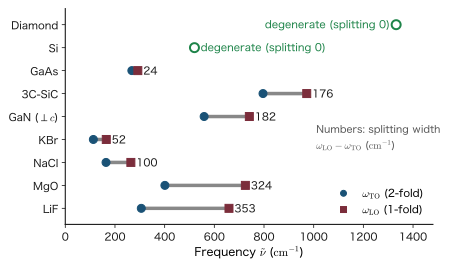
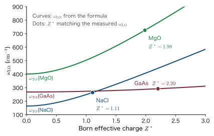
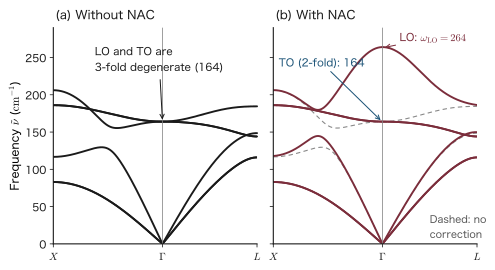

Chapter 32Splitting of Longitudinal and Transverse Optical Phonons — LO–TO Splitting and the Nonanalytic-Term Correction
When we measure the optical phonons of a polar crystal such as NaCl or GaAs (a crystal made of cations and anions), we find that the frequency splits into two near the $\Gamma$ point. The transverse optical (TO) phonon, whose displacement is perpendicular to the direction of propagation, is twofold degenerate, whereas the longitudinal optical (LO) phonon, whose displacement is parallel to the direction of propagation, is a single branch and, moreover, has a higher frequency than the TO phonon. In NaCl the two frequencies are $164\,\mathrm{cm^{-1}}$ and $264\,\mathrm{cm^{-1}}$, which differ by as much as 60%. In Si and diamond, however, no splitting occurs. The group theory of Chapter 11 predicted that the optical modes of a cubic crystal at the $\Gamma$ point are threefold degenerate. Why does this prediction appear to fail only in polar crystals? This is LO–TO splitting, the starting point of this chapter.
The answer, in a nutshell, is that only the longitudinal wave produces a macroscopic electric field. When cations and anions are displaced in opposite directions, a polarization appears. In a longitudinal wave, the modulation of the polarization gives a charge distribution like a row of alternately charged sheets, and an electric field arises between neighboring sheets. This field pushes the ions back toward their original positions, which is equivalent to a stiffer spring, so the frequency rises. In a transverse wave the displacement is merely along the sheets, so no charge is produced. Because the electric field is a long-range force that reaches far, it does not vanish even as the wavenumber $\qq$ approaches 0, and its effect also depends on the direction of $\qq$. “Exactly $\qq=0$,” which group theory treats, and “the limit $\qq\to0$,” which experiments observe, are not the same thing.
This topic concerns everyone who uses first-principles phonon calculations. If you compute the phonon dispersion of a polar crystal with phonopy or similar software, the result as it stands shows LO and TO degenerate at the $\Gamma$ point, a figure that disagrees with experiment. The procedure that fixes this is the nonanalytic-term correction (NAC). The name sounds difficult, but the content is nothing more than adding to the dynamical matrix the “force produced by the electric field of the longitudinal wave,” which we derive in the first half of this chapter. We will go through, step by step with figures and numerical examples, what is being added, why it is called “nonanalytic,” what the correction requires (the Born effective charge $Z^*$ and the electronic permittivity $\epsilon_\infty$), and where mistakes are easily made.
Let us describe the connections with the neighboring chapters. In Chapter 19, Section 19.6 we derived the Lyddane–Sachs–Teller relation in Gaussian units. In this chapter we derive the same content again in SI units, with the effective charge $Z^*$ in the leading role, and go on to the general formula (the nonanalytic term) for polyatomic and anisotropic crystals. The electric field of the LO phonon scatters electrons (the Fröhlich interaction of Chapter 22, Section 22.3) and clings to electrons to form polarons (Chapter 31, Section 31.7). Hybridization with light (polaritons) is treated in Chapter 33, Section 33.10, and the strength of infrared absorption in Chapter 34, Section 34.6.
- The experimental fact that $\omega_{\rm LO}\gt\omega_{\rm TO}$ in polar crystals while no splitting occurs in Si and diamond, and how it is measured (Raman scattering, infrared reflection, inelastic neutron scattering)
- Why only the longitudinal optical mode produces a bound charge $\rho_b=-\nabla\cdot\bm P$ and a macroscopic electric field $\EE=-\bm P_{\rm ion}/\epsilon_0\epsilon_\infty$ (the “charged sheets” picture and the Maxwell equations), and why, when the polarization is oblique, the electric field arises only from the component parallel to $\qq$
- The LO–TO splitting formula $\omega_{\rm LO}^2=\omega_{\rm TO}^2+(Z^*e)^2/(\epsilon_0\epsilon_\infty M_r\Omega)$ for the two-atom model, and a complete derivation of the Lyddane–Sachs–Teller relation in SI units
- The pole ($\omega_{\rm TO}$) and zero ($\omega_{\rm LO}$) of the dielectric function $\epsilon(\omega)$, the reststrahlen band, and infrared reflectivity
- Why the two definitions of the Born effective charge tensor $Z^*_{\kappa,\alpha\beta}$ are equal, how it differs from the formal charge, and the acoustic sum rule
- The derivation of the nonanalytic term $D^{\rm NA}$ of the dynamical matrix, and the meaning of “nonanalytic” (the limit $\qq\to0$ depends on the direction)
- Why the nonanalytic-term correction is needed in first-principles phonon calculations, its inputs ($\epsilon_\infty$ and $Z^*$), what to check, and where mistakes are easily made
- The angular dispersion in uniaxial crystals, screening by free carriers and the coupling of LO phonons and plasmons, and why the splitting vanishes in two-dimensional materials
32.1 Experimental Facts — In Polar Crystals the LO and TO Frequencies Differ
32.1.1 Longitudinal and transverse waves of optical modes
First we check the terminology. A crystal with two or more atoms in the unit cell has an optical branch in addition to the acoustic branches (Chapter 13, Section 13.6). In an optical mode of long wavelength ($\qq\to0$), the atoms within the unit cell move in opposite directions, and the center of mass of the unit cell stays at rest. In NaCl, Na$^+$ and Cl$^-$ are displaced in opposite directions to each other.
A wave has a direction of propagation (the direction of the wave vector $\qq$) and a direction in which the atoms move (the direction of the displacement; the unit vector along that direction is called the polarization vector). We classify waves by the relation between these two.
Definition: Longitudinal and transverse waves
- Longitudinal wave: the atomic displacement is parallel to $\qq$. For a sound wave, this is a compression wave. The longitudinal wave of the optical branch is called the LO (longitudinal optical) phonon.
- Transverse wave: the atomic displacement is perpendicular to $\qq$. Since there are two directions perpendicular to $\qq$, there are two transverse waves. The transverse wave of the optical branch is called the TO (transverse optical) phonon.
Along highly symmetric directions of a cubic crystal ($[100]$, $[111]$, etc.), the two transverse waves have the same frequency because of symmetry (they are twofold degenerate).
Please compare the two panels of Figure 32.1. In both, the cations and anions are displaced in opposite directions, and if we considered only the stretching and compression of springs (short-range forces), there would be no reason for the restoring force to depend strongly on whether the displacement is parallel or perpendicular to $\qq$. Indeed, in a cubic crystal the three directions $x,y,z$ of the optical mode at $\qq=0$ are carried into one another by symmetry operations, so the group theory of Chapter 11 predicts that “the optical mode at the $\Gamma$ point is threefold degenerate” (Chapter 11, Section 11.9. For the rock-salt type (point group $O_h$) the irreducible representation is $T_{1u}$. For the zinc-blende type (point group $T_d$) the same three-dimensional representation is called $T_2$, also written $\Gamma_{15}$). In (b), however, the places where cations gather and the places where anions gather form stripes. These stripes become stripes of charge and create an electric field—this is the subject of this chapter (Section 32.2).
32.1.2 Measured values
Table 32.1 collects the optical-phonon frequencies near the $\Gamma$ point for representative crystals. Following the convention of spectroscopy, instead of the angular frequency $\omega$ we write the wavenumber $\tilde\nu=\omega/(2\pi c)$ (in units of $\mathrm{cm^{-1}}$), while keeping the symbols $\omega_{\rm TO}$ and $\omega_{\rm LO}$. First we summarize the meaning of the symbols that appear in the table.
Notation: Symbols used in this chapter
- $\Omega$: the volume of the unit cell. In Chapters 17 and 22 we used $\hbar\Omega$ for the energy of an optical phonon, but the $\Omega$ of this chapter has nothing to do with that (a phonon frequency is always written $\omega$ with a subscript). For the rock-salt and zinc-blende types with face-centered cubic lattice constant $a$, $\Omega=a^3/4$.
- $\epsilon_s$: the static relative permittivity (the relative permittivity for a slowly varying electric field, including the ionic polarization; $\epsilon(0)$ of Chapter 19). $\epsilon_\infty$: the high-frequency (electrons-only) relative permittivity (the relative permittivity for a fast electric field that the ions cannot follow; $\epsilon(\infty)$ of Chapter 19).
- “GaN ($\qq\perp c$)” in Table 32.1 is the value for the case in which the propagation direction $\qq$ of the wave is perpendicular to the $c$ axis of the hexagonal crystal (the reason the value depends on the direction is given in Section 32.6.5).
- $Z^*$: the Born effective charge (dimensionless; the charge is $Z^*e$). In general it is a $3\times3$ tensor $Z^*_{\kappa,\alpha\beta}$ for each atom $\kappa$ (Section 32.5). For a cubic crystal with two atoms per cell, $Z^*_{\kappa,\alpha\beta}=\pm Z^*\delta_{\alpha\beta}$. It is a different quantity from the quasiparticle weight (renormalization factor) $Z$ of Chapters 27 and 28.
- $M_r$: the reduced mass of the cation and the anion; $\bm w$: the relative displacement. $\mathcal E$: the magnitude or a component of the electric field; $\EE$: the electric field vector.
- When the frequency is written in $\mathrm{cm^{-1}}$, $\omega=2\pi c\tilde\nu$. $1\,\mathrm{meV}=8.0655\,\mathrm{cm^{-1}}$.
| Material | $\omega_{\rm TO}$ ($\mathrm{cm^{-1}}$) | $\omega_{\rm LO}$ ($\mathrm{cm^{-1}}$) | $\epsilon_s$ | $\epsilon_\infty$ | $(\omega_{\rm LO}/\omega_{\rm TO})^2$ | $\epsilon_s/\epsilon_\infty$ |
|---|---|---|---|---|---|---|
| Diamond | 1332 | 1332 | 5.7 | 5.7 | 1 | 1 |
| Si | 520 | 520 | 11.7 | 11.7 | 1 | 1 |
| GaAs | 268 | 292 | 12.9 | 10.9 | 1.187 | 1.183 |
| 3C-SiC | 796 | 972 | 9.72 | 6.52 | 1.491 | 1.491 |
| GaN ($\qq\perp c$) | 559 | 741 | about 9.5 | about 5.35 | 1.757 | 1.78 |
| KBr | 113 | 165 | 4.90 | 2.34 | 2.13 | 2.09 |
| NaCl | 164 | 264 | 5.90 | 2.25 | 2.59 | 2.62 |
| MgO | 401 | 725 | about 9.8 | 2.95 | 3.27 | 3.32 |
| LiF | 306 | 659 | about 9.0 | 1.96 | 4.64 | 4.59 |

The following can be read off from Figure 32.2.
- In a polar crystal, always $\omega_{\rm LO}\gt\omega_{\rm TO}$. There is no example of the reverse order.
- A nonpolar crystal (one kind of atom only) shows no splitting. In Si and diamond the optical mode at the $\Gamma$ point remains threefold degenerate (in the dispersion of Ge in Chapter 13, Section 13.9 as well, LO and TO coincided at $\Gamma$).
- The size of the splitting serves as a rough measure of ionicity. It is 9 % for GaAs (strongly covalent), 61 % for NaCl, and more than a factor of two for LiF.
- The last two columns of the table are nearly equal. This is the Lyddane–Sachs–Teller relation $\omega_{\rm LO}^2/\omega_{\rm TO}^2=\epsilon_s/\epsilon_\infty$, which we derive in Section 32.3.
Example 32.1: Converting the units of the LO phonon of GaAs and checking the LST relation
Let $\omega_{\rm TO}=268\,\mathrm{cm^{-1}}$, $\omega_{\rm LO}=292\,\mathrm{cm^{-1}}$, $\epsilon_s=12.9$, and $\epsilon_\infty=10.9$ for GaAs. (1) Express $\hbar\omega_{\rm LO}$ in meV and the frequency $\omega_{\rm LO}/2\pi$ in THz, and compare with the value $\hbar\omega_{\rm LO}=36\,\mathrm{meV}$ used throughout this book. (2) Compare $(\omega_{\rm LO}/\omega_{\rm TO})^2$ with $\epsilon_s/\epsilon_\infty$.
Solution. (1) Since $1\,\mathrm{meV}=8.0655\,\mathrm{cm^{-1}}$,
$$ \hbar\omega_{\rm LO}=\frac{292}{8.0655}\,\mathrm{meV}=36.2\,\mathrm{meV} $$The frequency is $\omega/2\pi=c\tilde\nu$ $=(2.998\times10^{10}\,\mathrm{cm/s})\times292\,\mathrm{cm^{-1}}$ $=8.75\,\mathrm{THz}$. It agrees with the value $36\,\mathrm{meV}$ used in this book (for TO, $268/8.0655=33.2\,\mathrm{meV}$).
(2)
$$ \left(\frac{292}{268}\right)^2=1.0896^2=1.187,\qquad\frac{12.9}{10.9}=1.183 $$The difference is $0.3\,\%$, so the two agree within the measurement error. ∎ The difference between LO and TO is only $24\,\mathrm{cm^{-1}}=3\,\mathrm{meV}$, yet it is tied exactly to the ratio of the permittivities (how much the ionic polarization adds).
32.1.3 Why it seems to contradict the prediction of group theory — $\qq=0$ versus $\qq\to0$
Do the prediction of group theory (threefold degeneracy) and the experiment (splitting into 2 + 1) contradict each other? They do not. What group theory treats is the state at exactly $\qq=0$, where the displacements in the three directions are carried into one another by symmetry operations. However, a wave at exactly $\qq=0$ has no propagation direction, so the distinction between longitudinal and transverse waves cannot even be made. What experiments see is a wave with a small but nonzero $\qq$, whose wavelength is much shorter than the size of the crystal. There the direction of $\qq$ is fixed, and longitudinal and transverse waves can be distinguished.
As in Figure 32.3, when we follow the dispersion curve toward $\Gamma$, from either direction the LO branch approaches $\omega_{\rm LO}$ and the TO branch approaches $\omega_{\rm TO}$. The branches do not converge to one point but approach two separate values. That is, the limit $\qq\to0$ differs depending on whether the branch is LO or TO. On the other hand, at exactly $\qq=0$, which is what group theory treats, there is no propagation direction, so longitudinal and transverse cannot be distinguished and “which value” is not determined. Moreover, as we will see later (Section 32.6), which atomic displacement becomes “LO” is determined by the direction of $\qq$. If we approach from the $x$ direction, the displacement in the $x$ direction is LO; if we approach from the $y$ direction, the displacement in the $y$ direction is LO. This is the meaning of “the limit $\qq\to0$ depends on the direction,” and it is the true nature of the property we call “nonanalytic” in Section 32.6. It is not that the prediction of group theory has failed: the long-range electric field, which lies outside group theory, remains even as $\qq\to0$.
32.1.4 How to measure
There are mainly three methods for measuring the frequencies of LO and TO.
- Raman scattering (Chapter 34). Visible light is incident on the crystal, and we analyze the scattered light whose frequency has been lowered by the creation of one phonon. The wavenumber of the light is about $10^5\,\mathrm{cm^{-1}}$, roughly 1/1000 of the size of the Brillouin zone (about $10^8\,\mathrm{cm^{-1}}$), so what we see is very close to $\Gamma$, that is, the value in the limit $\qq\to0$. In zinc-blende-type GaAs two lines, LO and TO, are seen, whereas in diamond-structure Si only a single threefold-degenerate line is seen ($520\,\mathrm{cm^{-1}}$; Example 11.6 of Chapter 11).
- Infrared reflection and absorption. A TO phonon carries an oscillating dipole, so it couples directly to infrared light. The reflectivity spectrum shows a band of high reflection (the reststrahlen band) lying between $\omega_{\rm TO}$ and $\omega_{\rm LO}$, and the two frequencies can be read off from its two edges (Section 32.4).
- Inelastic neutron scattering (Chapter 13, Section 13.9). The wavenumber of a neutron is comparable to the size of the Brillouin zone, so the entire dispersion relation $\omega(\qq)$ can be measured. If we follow the branches as they approach $\Gamma$, the splitting between LO and TO can be seen.
Example 32.2: The face on which only LO is seen and the face on which only TO is seen in the Raman spectrum of GaAs
Light is sent into zinc-blende-type GaAs through the (001) face, and the light returning backward is measured (backscattering). Only the LO line ($292\,\mathrm{cm^{-1}}$) appears in the Raman spectrum, and the TO line does not. In backscattering from the (110) face, conversely, only TO appears. For the (001) face of Si, a single line at $520\,\mathrm{cm^{-1}}$ is seen. Explain these facts from “the direction of the wave vector $\qq$ of the phonon that is created” and “the definitions of LO and TO” (the detailed selection rules for the Raman tensor are treated in Chapter 34, Section 34.5.3).
Solution. In backscattering, the wavenumber of the incident light is $\bm k_i$ and that of the scattered light is $\bm k_s\simeq-\bm k_i$, so by momentum conservation the wave vector of the phonon that is created is $\qq=\bm k_i-\bm k_s\simeq2\bm k_i$. If the light is incident perpendicular to the (001) face, then $\qq\parallel[001]$.
From the properties of the Raman tensor of the zinc-blende type (Chapter 34, Section 34.5.3), the only optical modes that can cause Raman scattering in (001) backscattering are those in which the atoms are displaced in the $z$ direction (the $[001]$ direction). Since $\qq\parallel z$, the displacement in the $z$ direction is parallel to $\qq$, that is, it is LO. The TO modes, which are displaced in the $x$ and $y$ directions, cannot cause scattering in this configuration. For the (110) face we have $\qq\parallel[110]$, and the displacement directions that can cause scattering have a component perpendicular to $\qq$, so TO is seen.
In Si, LO and TO have the same frequency, so only one line is seen whichever face is used for the measurement. ∎ Even for the same “optical mode at the $\Gamma$ point” of the same crystal, the roles of LO and TO interchange when the direction of $\qq$ (the face used for the measurement) is changed. Which displacement is LO is determined by the direction of $\qq$, and this is seen directly in the experiment.
32.2 Only Longitudinal Waves Produce a Macroscopic Electric Field
32.2.1 Polarization waves and bound charge
When the cations and anions are displaced in opposite directions in an optical mode, a small electric dipole is produced in each unit cell. The dipole moment per unit volume is the polarization $\bm P$. Suppose a unit cell (volume $\Omega$) contains ions of charge $+Z^*e$ and $-Z^*e$, with relative displacement $\bm w$. The dipole of one unit cell is then $Z^*e\,\bm w$, so the polarization due to the displacement of the ions is
$$ \bm P_{\rm ion}=\frac{Z^*e}{\Omega}\,\bm w $$(the precise meaning of $Z^*$ is given in Section 32.5; for now we may regard it as “the effective charge of the ion”). For a long-wavelength optical mode $\bm w(\rr)=\bm w_0\,\ee^{i\qq\cdot\rr}$, the polarization is also the same wave, $\bm P(\rr)=\bm P_0\,\ee^{i\qq\cdot\rr}$ (we omit the time factor $\ee^{-i\omega t}$). Since the wavelength is much longer than the lattice spacing, $\bm P(\rr)$ may be regarded as a smooth field averaged over the size of a unit cell.
If the polarization differs from place to place, charge accumulates. As we learned in electromagnetism, the density of the bound charge (also called polarization charge) produced by the polarization $\bm P$ is
.
Derivation: $\rho_b=-\nabla\cdot\bm P$ and the bound charge of a polarization wave
Step 1: Consider one dimension. Consider a thin layer polarized in the $x$ direction, and let $P_x(x)$ be the areal density of charge that has moved to the right through the cross section at position $x$ (the polarization is the net areal density of charge that has crossed the cross section as a result of positive charge being displaced slightly toward $+x$ and negative charge toward $-x$). Into the thin layer $[x,x+\dd x]$ of width $\dd x$, an amount $P_x(x)$ enters through the left face, and an amount $P_x(x+\dd x)$ leaves through the right face. The areal density of the charge that accumulates is
$$ P_x(x)-P_x(x+\dd x)=-\frac{\dd P_x}{\dd x}\,\dd x $$and dividing this by the layer thickness $\dd x$ gives the volume density $\rho_b=-\dd P_x/\dd x$. In three dimensions we take the sum over the three directions and obtain $\rho_b=-\nabla\cdot\bm P$.
Step 2: Apply it to a wave. Differentiating $\bm P=\bm P_0\,\ee^{i\qq\cdot\rr}$ and using $\nabla\ee^{i\qq\cdot\rr}=i\qq\,\ee^{i\qq\cdot\rr}$, we have
$$ \rho_b=-\nabla\cdot\bm P=-i\qq\cdot\bm P_0\,\ee^{i\qq\cdot\rr} $$Step 3: Longitudinal and transverse waves. The product $\qq\cdot\bm P_0$ picks out only the component of $\bm P_0$ parallel to $\qq$.
- Longitudinal wave ($\bm P_0\parallel\qq$): $\qq\cdot\bm P_0=qP_0\ne0$. Charge density variations arise.
- Transverse wave ($\bm P_0\perp\qq$): $\qq\cdot\bm P_0=0$. Charge accumulates nowhere. ∎
Figure 32.4 is a picture of this result. In a longitudinal wave, $\bm P$ becomes stronger and weaker along the direction of $\qq$, so positive bound charge accumulates on the planes into which $\bm P$ “flows” and negative bound charge on the planes from which it “flows out.” Because charge accumulates on planes perpendicular to $\qq$, a long-wavelength LO phonon can be regarded as a row of capacitors made of alternately arranged positively and negatively charged plates. In a transverse wave, $\bm P$ merely lies along the plates, and no charge flows into or out of any plate.
32.2.2 From the Maxwell equations — $\bm D=0$ for longitudinal waves, $\EE=0$ for transverse waves
We now find the magnitude of the electric field between the plates exactly, from the Maxwell equations. Besides the ion displacements, the electron cloud of each ion is also polarized by the electric field. Electrons are light and follow the field immediately at optical-phonon frequencies, so the electronic polarization can be absorbed into the relative permittivity $\epsilon_\infty$: $\bm P_{\rm el}=\epsilon_0(\epsilon_\infty-1)\EE$. The total polarization is $\bm P=\bm P_{\rm ion}+\bm P_{\rm el}$, and the electric displacement is
$$ \bm D=\epsilon_0\EE+\bm P=\epsilon_0\epsilon_\infty\EE+\bm P_{\rm ion} $$.
Derivation: The electric field arises only from the component of the polarization parallel to $\qq$ — $\EE=-\bm P_{\rm ion}/\epsilon_0\epsilon_\infty$ for longitudinal waves, $\EE=0$ for transverse waves
Here we consider a cubic crystal and take $\epsilon_\infty$ to be a number (a scalar) independent of direction. The direction of the polarization wave $\bm P_{\rm ion}=\bm P_0\,\ee^{i\qq\cdot\rr}$ may be parallel, perpendicular, or oblique to $\qq$.
Step 1: Gauss's law. Suppose that there is no free charge (conduction electrons, etc.) in the crystal. Substituting $\bm D=\bm D_0\,\ee^{i\qq\cdot\rr}$ into one of the Maxwell equations, $\nabla\cdot\bm D=\rho_{\rm free}=0$, and using $\nabla\ee^{i\qq\cdot\rr}=i\qq\,\ee^{i\qq\cdot\rr}$, we obtain
$$ i\qq\cdot\bm D_0=0\qquad\Longrightarrow\qquad\qq\cdot\bm D=0 $$That is, $\bm D$ has no component parallel to $\qq$.
Step 2: Faraday's law — the electric field is parallel to $\qq$. Substituting a plane wave into $\nabla\times\EE=-\partial\BB/\partial t$ gives $i\qq\times\EE=i\omega\BB$, that is, $\abs{\qq\times\EE}=\omega\abs{\BB}$. The electric and magnetic fields are tied together through the speed of light, so $\abs{\BB}\sim\abs{\EE}/c$ in order of magnitude, and
$$ \abs{\qq\times\EE}\sim\frac{\omega}{c}\abs{\EE} $$If the phonon wavenumber $q$ is much larger than the wavenumber $\omega/c$ of light ($cq\gg\omega$; this is called “neglecting retardation”), the right-hand side is negligible compared with $q\abs{\EE}$, the rough magnitude of the left-hand side, and $\qq\times\EE\simeq0$. Since the cross product vanishes, $\EE$ is parallel to $\qq$, and using the unit vector $\hat{\qq}=\qq/q$ along $\qq$ we can write $\EE=\mathcal{E}\,\hat{\qq}$.
Step 3: Combining the two. Take the inner product of $\bm D=\epsilon_0\epsilon_\infty\EE+\bm P_{\rm ion}$ with $\hat{\qq}$, and use Step 1 ($\hat{\qq}\cdot\bm D=0$) and Step 2 ($\hat{\qq}\cdot\EE=\mathcal{E}$):
$$ \epsilon_0\epsilon_\infty\,\mathcal{E}+\hat{\qq}\cdot\bm P_{\rm ion}=0 \qquad\Longrightarrow\qquad \mathcal{E}=-\frac{\hat{\qq}\cdot\bm P_{\rm ion}}{\epsilon_0\epsilon_\infty} $$Returning to $\EE=\mathcal{E}\,\hat{\qq}$, we get
(If we write this in terms of the total polarization $\bm P=\bm P_{\rm ion}+\epsilon_0(\epsilon_\infty-1)\EE$, which includes the electronic polarization, the same procedure applied to $\bm D=\epsilon_0\EE+\bm P$ gives $\EE=-\hat{\qq}(\hat{\qq}\cdot\bm P)/\epsilon_0$.)
Step 4: Longitudinal wave. If $\bm P_{\rm ion}\parallel\qq$, then $\hat{\qq}(\hat{\qq}\cdot\bm P_{\rm ion})=\bm P_{\rm ion}$, so
In this case $\bm D=\epsilon_0\epsilon_\infty\EE_{\rm LO}+\bm P_{\rm ion}=0$.
Step 5: Transverse wave. If $\bm P_{\rm ion}\perp\qq$, then $\hat{\qq}\cdot\bm P_{\rm ion}=0$, so
$$ \EE_{\rm TO}=0 $$∎
Reading Eq. \eqref{eq:32-Eproj} in words: the electric field picks up only the component $\bm P_\parallel=\hat{\qq}(\hat{\qq}\cdot\bm P_{\rm ion})$ of the polarization that is parallel to $\qq$, and appears parallel to $\qq$ in the direction opposite to it. The component perpendicular to $\qq$ merely runs along the wavefronts (plates) and accumulates no charge, so it has no effect on the electric field (Figure 32.4(c)). A longitudinal wave (all of the polarization is the parallel component) and a transverse wave (all of it is the perpendicular component) are the two extreme cases. Another important point is that Eq. \eqref{eq:32-Eproj} does not contain the magnitude $q$ of $\qq$, only its direction $\hat{\qq}$. Even as $q\to0$ the electric field does not vanish, and its value depends on the direction from which $\qq$ approaches 0. The origin of the property called “nonanalytic” in Section 32.6 already appears in this equation.
Eq. \eqref{eq:32-ELO} is the starting point of everything in this chapter. Note the sign: the electric field is opposite to the polarization. At a place where the polarization points in the $+x$ direction, the cations are displaced toward $+x$ and the anions toward $-x$. If an electric field in the $-x$ direction acts there, the cations are pushed toward $-x$ and the anions toward $+x$, so both are pulled back toward their equilibrium positions. The electric field adds a restoring force to the short-range springs, so the frequency of the longitudinal wave is higher than that of the transverse wave. This is the reason for $\omega_{\rm LO}\gt\omega_{\rm TO}$.
Before the electronic polarization is included ($\epsilon_\infty=1$), $\EE_{\rm LO}=-\bm P_{\rm ion}/\epsilon_0$. The electron clouds are polarized in the opposite direction and partially cancel (screen) the charge of the ions, so the actual electric field is weakened by the factor $1/\epsilon_\infty$.
![A figure in three rows and two columns showing the polarization, the bound charge density, and the macroscopic electric field as functions of position over two wavelengths, for a longitudinal wave and a transverse wave. For the longitudinal wave the polarization is a cosine wave and the bound charge is a sine wave, with positive peaks filled in red and negative troughs in indigo, and the electric field is a cosine wave of opposite sign to the polarization. For the transverse wave the polarization is the same cosine wave, but the bound charge and the electric field are both zero straight lines.](figs/ch32_fig32-5.svg)
Example 32.3: The electric field and bound charge produced by an LO phonon in GaAs
Consider an LO phonon (wavelength $\lambda=100\,\mathrm{nm}$) in GaAs ($Z^*=2.2$, lattice constant $a=5.653\,\text{Å}$, $\epsilon_\infty=10.9$) in which the amplitude of the relative displacement of Ga and As is $w_0=0.01\,\text{Å}$. (1) Find the amplitude $P_0$ of the ionic polarization. (2) Find the amplitude of the electric field, and compare it with the value without electronic screening. (3) Express the amplitude of the bound-charge density as a number of elementary charges per $\mathrm{cm^3}$.
Solution. (1) The volume of the unit cell is $\Omega=a^3/4$ $=(5.653\times10^{-10}\,\mathrm{m})^3/4$ $=4.516\times10^{-29}\,\mathrm{m^3}$.
$$ P_0=\frac{Z^*e\,w_0}{\Omega}=\frac{2.2\times1.602\times10^{-19}\,\mathrm{C}\times1.0\times10^{-12}\,\mathrm{m}}{4.516\times10^{-29}\,\mathrm{m^3}}=7.80\times10^{-3}\,\mathrm{C/m^2} $$(This is $0.78\,\mu\mathrm{C/cm^2}$, about 3 % of the spontaneous polarization $26\,\mu\mathrm{C/cm^2}$ of the ferroelectric BaTiO$_3$.)
(2) From Eq. \eqref{eq:32-ELO},
$$ \mathcal{E}_0=\frac{P_0}{\epsilon_0\epsilon_\infty}=\frac{7.80\times10^{-3}}{8.854\times10^{-12}\times10.9}\,\mathrm{V/m}=8.1\times10^{7}\,\mathrm{V/m} $$Without electronic screening it would be $P_0/\epsilon_0=8.8\times10^{8}\,\mathrm{V/m}$, which is 10.9 times larger.
(3) Since $q=2\pi/\lambda$ $=6.28\times10^{7}\,\mathrm{m^{-1}}$,
$$ \abs{\rho_b}=qP_0=6.28\times10^{7}\times7.80\times10^{-3}\,\mathrm{C/m^3}=4.9\times10^{5}\,\mathrm{C/m^3} $$Dividing by the elementary charge gives $3.1\times10^{24}\,\mathrm{m^{-3}}=3.1\times10^{18}\,\mathrm{cm^{-3}}$. ∎ Although the atomic displacement is only 0.2 % of the lattice constant, the electric field reaches nearly $10^8\,\mathrm{V/m}$ (the dielectric breakdown field of a semiconductor is about $10^7\,\mathrm{V/m}$). The bound-charge density amounts to only $10^{-4}$ elementary charges per unit cell, but it is arranged as many layers of “plates,” which produces a strong electric field. It is this electric field that scatters conduction electrons through the Fröhlich interaction of Chapter 22 (Section 22.3).
Supplement: Correspondence with Chapter 19 (Gaussian units)
In Chapter 19 (Section 19.6.1) we wrote the same conclusion in Gaussian units as $\EE_{\rm LO}=-4\pi\bm P$, $\EE_{\rm TO}=0$. The translation between SI and Gaussian units is $\bm D=\epsilon_0\EE+\bm P\ \leftrightarrow\ \bm D=\EE+4\pi\bm P$, that is, “$1/\epsilon_0\to4\pi$.” The equation of Chapter 19 is in the form in which the electronic polarization is also included in $\bm P$ ($\EE=-4\pi\bm P$ from $\bm D=0$), whereas Eq. \eqref{eq:32-ELO} of this chapter puts the electronic part into $\epsilon_\infty$ and writes only the ionic part as $\bm P_{\rm ion}$. The two agree once $\bm P=\bm P_{\rm ion}+\epsilon_0(\epsilon_\infty-1)\EE$ is substituted.
When retardation is not neglected, that is, when $q$ becomes as small as the wavenumber $\omega/c$ of light, the electric field of the transverse wave no longer vanishes, and the TO phonon mixes with light. This is the phonon polariton, which is treated in Chapter 33, Section 33.10. As we will see there, $q\sim\omega/c$ is an extremely narrow range, about $10^{-4}$ of the size of the Brillouin zone, and in a phonon dispersion diagram it is squeezed into the $\Gamma$ point. From here on in this chapter we neglect retardation ($cq\gg\omega$).
Try It Live: Bound charge and electric field of longitudinal and transverse waves
Watch an animation of a long-wavelength optical mode with $\qq\parallel x$ vibrating on the (001) plane of NaCl (Na$^+$ in amber, Cl$^-$ in green). When you switch between the longitudinal LO wave and the transverse TO wave with “Wave type,” the shading of the bound charge (red = positive plate, blue = negative plate) and a macroscopic electric field opposite to the polarization $\bm P$ appear only for LO; verify that for TO “$\EE=0$” and “$\rho_b=0$” (Figure 32.4, Figure 32.5). The third option, “Oblique (45°),” is an oblique polarization made by superposing LO and TO with equal amplitudes; only the component $\bm P_\parallel$ of the polarization parallel to $\qq$ puts charge on the plates, and the electric field appears parallel to $\qq$ (Eq. \eqref{eq:32-Eproj}, Figure 32.4(c)). The $\bm P$ in the on-screen formula $\EE=-\bm P/\epsilon_0\epsilon_\infty$ is, as in Eq. \eqref{eq:32-ELO} of the text, the polarization $\bm P_{\rm ion}$ due to the ion displacements. With “Pause” and “Advance 1/8 period,” you can step through frame by frame and see that the charge plates form at positions shifted by a quarter wavelength from the peaks and troughs of the polarization. Also note that when you change the wavelength with the “Wavelength λ” slider (6 to 24 times the lattice constant $a$), the spacing of the charge stripes changes, but the wavelength does not enter Eq. \eqref{eq:32-ELO}, which determines the strength of the electric field (Section 32.2.3).
32.2.3 Why the field does not vanish even as $\qq\to0$ — long-range forces and the shape of the sample
Did you notice in Figure 32.5 and Example 32.3 that the wavelength does not enter the magnitude $P_0/\epsilon_0\epsilon_\infty$ of the electric field? The bound-charge density $qP_0$ becomes thinner as the wavelength gets longer, but the spacing of the plates widens by the same factor, and the electric field does not change. Therefore the restoring force due to the electric field remains even as $\qq\to0$, and the LO frequency does not return to $\omega_{\rm TO}$.
This is a manifestation of the long range of the interaction between dipoles. The electric field that a single dipole $\bm p$ produces at a distance $r$ decreases only as $1/r^3$. When we add up the fields from all the dipoles in the crystal, the number of dipoles in a spherical shell of radius $R$ is proportional to $R^2\,\dd R$, so the sum takes the form $\int R^2\cdot R^{-3}\,\dd R=\int\dd R/R$, and the contributions from far away do not become small (if we add only the magnitudes, the sum keeps growing like $\ln R$). The reason the sum nevertheless settles to a finite value is that the electric field of a single dipole, $\propto[3(\bm p\cdot\hat{\rr})\hat{\rr}-\bm p]/r^3$, averages to zero over directions on the spherical shell (the average of the square of a component of $\hat{\rr}$ is $1/3$, so $3\times\tfrac13\bm p-\bm p=0$), and the positive and negative contributions within the same shell cancel. However, this cancellation occurs only when the shell is complete, “with nothing missing.” If the distant boundary is not a sphere, the contribution of the missing part remains with a magnitude independent of the distance. This is what mathematicians call conditional convergence (the value of the sum changes with the order of summation), and as a result the value of the sum depends on “the shape into which we add up”—that is, on the shape of the sample or the orientation of the wavefronts of the polarization. Section 32.6.4 shows this in a few lines in the language of the Fourier transform.
Figure 32.6 rests on the same argument as the depolarizing field of Section 19.1 in Chapter 19. The electric field inside a uniformly polarized sample is determined not only by the magnitude of the polarization but also by the shape of the sample: if a thin plate is polarized perpendicular to its faces, the depolarizing field is at its largest, $-\bm P/\epsilon_0$, and if it is polarized along the plate, the field is 0. A single wavefront of a long-wavelength polarization wave can be regarded as an infinitely wide thin plate perpendicular to $\qq$. LO is a “plate polarized perpendicular to its faces,” and TO is a “plate polarized along its faces.” The difference between LO and TO is the wave version of the fact that the depolarizing field depends on the shape of the sample. And since changing the direction of $\qq$ amounts to changing the orientation of the plate, it is also natural that the value in the limit $\qq\to0$ depends on the direction of $\qq$.
Example 32.4: Checking with Gauss's law that no charge accumulates in a transverse wave
Consider a transverse wave with $\qq\parallel x$ and polarization in the $y$ direction, $P_y(x)=P_0\cos qx$. On a plane perpendicular to $x$ (a wavefront), consider a thin box of in-plane area $A$ (its two bases are at $x=x_0\pm\delta$). Find the bound charge inside the box from the flow of polarization across the surface of the box, and show that it is 0. Do the same for a longitudinal wave $P_x(x)=P_0\cos qx$, and reproduce $\rho_b=qP_0\sin qx_0$.
Solution. The bound charge accumulated inside the box is the flow of polarization out through the surface (the surface integral of $\bm P$) with a negative sign: $Q_b=-\oint\bm P\cdot\dd\bm S$.
Transverse wave: $\bm P=(0,P_y(x),0)$. The normals of the two bases at $x=x_0\pm\delta$ are $\pm\hat{\bm x}$, and $\bm P\cdot\hat{\bm x}=0$, so they do not contribute. Of the side faces, on the two perpendicular to $y$ we have $\bm P\cdot(\pm\hat{\bm y})=\pm P_y(x)$, but the contributions of the two opposite faces over the same range of $x$ cancel (since $P_y$ does not depend on $y$). Hence $Q_b=0$.
Longitudinal wave: $\bm P=(P_x(x),0,0)$. The side faces do not contribute, and from the two bases
$$ Q_b=-\bigl[P_x(x_0+\delta)-P_x(x_0-\delta)\bigr]A\simeq-\frac{\dd P_x}{\dd x}\Big|_{x_0}2\delta\,A=qP_0\sin qx_0\times2\delta A $$Dividing by the volume $2\delta A$ gives $\rho_b=qP_0\sin qx_0$. ∎ In a transverse wave the polarization merely “flows along the wavefront,” and there is no difference between inflow and outflow for any box. In a longitudinal wave the amount of flow across the wavefront differs from place to place, so the difference accumulates as charge.
32.3 The LO–TO Splitting Formula and the Lyddane–Sachs–Teller Relation
We now turn the picture of Section 32.2 into equations. Only two equations are used: the equation of motion of the ions and the expression for the polarization. The same content was derived in Chapter 19, Section 19.6, using Gaussian units and the local field (Lorentz field). Here we derive it again in SI units, with the Born effective charge $Z^*$, which connects directly to first-principles calculations, playing the leading role.
32.3.1 Model — a diatomic cubic crystal
Consider a cubic crystal such as NaCl or GaAs, with one cation and one anion per unit cell (Figure 32.7). For a long-wavelength optical mode, the center of mass of the unit cell stays at rest, so the only variable is the relative displacement $\bm w=\uu_+-\uu_-$.
Derivation 1: Equation of motion for the relative displacement
A cation (mass $M_+$, displacement $\uu_+$) and an anion (mass $M_-$, displacement $\uu_-$) are connected by a spring of spring constant $K$ and placed in an electric field $\EE$. Newton's equations of motion are
$$ M_+\ddot{\uu}_+=-K(\uu_+-\uu_-)+Z^*e\EE,\qquad M_-\ddot{\uu}_-=-K(\uu_--\uu_+)-Z^*e\EE $$Dividing the first equation by $M_+$ and the second by $M_-$ and subtracting side by side, we obtain
$$ \ddot{\uu}_+-\ddot{\uu}_-=-K\left(\frac{1}{M_+}+\frac{1}{M_-}\right)(\uu_+-\uu_-)+Z^*e\left(\frac{1}{M_+}+\frac{1}{M_-}\right)\EE $$Define the reduced mass $M_r$ by $1/M_r=1/M_++1/M_-$ and multiply both sides by $M_r$. Writing $K=M_r\omega_{\rm TO}^2$ (its meaning will become clear shortly), we have
∎ This is the optical mode at the $\Gamma$ point of the diatomic chain of Chapter 13 (of the form $\omega^2=K/M_r$), with the force due to the electric field added.
As we saw in Section 32.2, the polarization is the sum of the part due to the ion displacement and the part due to the electron cloud:
Supplement: Where did the local field (Lorentz field) go?
In Chapter 19, Section 19.2, we emphasized that the electric field felt by an ion is not the macroscopic electric field $\EE$ but the local field $\EE_{\rm loc}=\EE+\bm P/3\epsilon_0$ (SI), which includes the contributions of the surrounding dipoles. The local field does not appear in Eqs. \eqref{eq:32-eom} and \eqref{eq:32-pol}, but this is not an approximation; it is only a difference in how the equations are written. If we eliminate $\EE_{\rm loc}$ from the three equations (equation of motion, polarization, and local field) of Chapter 19, Section 19.6.2, we obtain exactly the form of Eqs. \eqref{eq:32-eom} and \eqref{eq:32-pol}, with the coefficients replaced by
$$ Z^*e=e^*\,\frac{\epsilon_\infty+2}{3},\qquad \omega_{\rm TO}^2=\omega_0^2-\frac{e^{*2}}{3\epsilon_0M_r\Omega}\cdot\frac{\epsilon_\infty+2}{3} $$(the first equation is precisely the equation $Z^*e\equiv e^*(\epsilon(\infty)+2)/3$ that defined the Born effective charge in Chapter 19, Section 19.6.2; $e^*$ is the charge of the “bare” ion, and $\omega_0$ is the frequency of the spring before the local field is included). In other words, $Z^*$ and $\omega_{\rm TO}$ in this chapter are quantities that already include the effect of the local field. Since $\omega_{\rm TO}$ is a measurable quantity and $Z^*$ is a quantity obtained directly from first-principles calculations (Section 32.5), this way of writing is more practical.
32.3.2 Frequencies of the transverse and longitudinal waves
Derivation 2: $\omega_{\rm TO}$ and $\omega_{\rm LO}$
For a vibration $\bm w\propto\ee^{-i\omega t}$ we have $\ddot{\bm w}=-\omega^2\bm w$. Equation \eqref{eq:32-eom} becomes
$$ -M_r\omega^2\bm w=-M_r\omega_{\rm TO}^2\bm w+Z^*e\EE $$Transverse wave. By Section 32.2, $\EE=0$. Then $\omega^2=\omega_{\rm TO}^2$. This is why we wrote the spring constant as $K=M_r\omega_{\rm TO}^2$: $\omega_{\rm TO}$ is the frequency determined by the short-range force alone.
Longitudinal wave. By Section 32.2, $\bm D=\epsilon_0\EE+\bm P=0$. Substituting Eq. \eqref{eq:32-pol}, we obtain
$$ \epsilon_0\EE+\frac{Z^*e}{\Omega}\bm w+\epsilon_0(\epsilon_\infty-1)\EE =\epsilon_0\epsilon_\infty\EE+\frac{Z^*e}{\Omega}\bm w=0 \qquad\Longrightarrow\qquad \EE=-\frac{Z^*e}{\epsilon_0\epsilon_\infty\Omega}\,\bm w $$(the same as Eq. \eqref{eq:32-ELO}). Substituting this into the equation of motion gives
$$ -M_r\omega^2\bm w=-M_r\omega_{\rm TO}^2\bm w-\frac{(Z^*e)^2}{\epsilon_0\epsilon_\infty\Omega}\bm w $$Dividing both sides by $-M_r\bm w$, we obtain
∎
The second term of Eq. \eqref{eq:32-wLO} is the “extra spring” produced by the LO electric field pulling the ions back. Let us sort out how to read it.
- $(Z^*e)^2$: the more charge the ions carry, the larger the polarization, the electric field, and the force. The charge acts twice (when it creates the polarization and when it receives the force), hence the square. Si, with $Z^*=0$, shows no splitting.
- $1/\epsilon_\infty$: the more strongly the electron cloud screens the ionic charge, the weaker the electric field.
- $1/M_r$: the heavier the ions, the harder they are to move with the same force.
- $1/\Omega$: the larger the unit cell, the thinner the polarization (per unit volume) for the same dipole.
32.3.3 Static permittivity
Derivation 3: Static relative permittivity $\epsilon_s$
Apply a slowly varying uniform electric field $\EE$ ($\omega\to0$; since it is uniform, $\qq=0$, and we do not impose conditions such as Maxwell's $\bm D=0$; $\EE$ is given from outside). Setting $\ddot{\bm w}=0$ in Eq. \eqref{eq:32-eom}, the equilibrium relative displacement is
$$ \bm w=\frac{Z^*e}{M_r\omega_{\rm TO}^2}\,\EE $$Substituting this into Eq. \eqref{eq:32-pol}, we obtain
$$ \bm P=\frac{(Z^*e)^2}{\Omega M_r\omega_{\rm TO}^2}\,\EE+\epsilon_0(\epsilon_\infty-1)\EE $$The relative permittivity is $\epsilon_s=1+P/(\epsilon_0\mathcal{E})$, so
∎ The second term is the contribution of the polarization due to the ion displacement (ionic polarization), and it is the SI version of the Born-effective-charge equation of Chapter 19, Section 19.6.2 ($\epsilon(0)-\epsilon(\infty)=4\pi N(Z^*e)^2/(\mu\,\omega_{TO}^2)$ in Gaussian units; see the Supplement below).
32.3.4 The Lyddane–Sachs–Teller relation
Theorem 32.1: Lyddane–Sachs–Teller relation (1941)
For a cubic crystal with one pair of optical modes,
Proof
Dividing both sides of Eq. \eqref{eq:32-epss} by $\epsilon_\infty$, we obtain
$$ \frac{\epsilon_s}{\epsilon_\infty}=1+\frac{(Z^*e)^2}{\epsilon_0\epsilon_\infty M_r\Omega\,\omega_{\rm TO}^2} $$Dividing both sides of Eq. \eqref{eq:32-wLO} by $\omega_{\rm TO}^2$, we obtain
$$ \frac{\omega_{\rm LO}^2}{\omega_{\rm TO}^2}=1+\frac{(Z^*e)^2}{\epsilon_0\epsilon_\infty M_r\Omega\,\omega_{\rm TO}^2} $$The right-hand sides are the same, so the left-hand sides are also equal. ∎
The key point of the proof is that the “extra spring” that raises the LO frequency and the “ionic polarization” that raises the static permittivity both come from the same quantity $(Z^*e)^2/(\epsilon_0M_r\Omega)$. Precisely because the ions carry charge and can move, they are polarized in a static electric field ($\epsilon_s\gt\epsilon_\infty$), and in a longitudinal wave they are pulled back by the electric field of their own polarization ($\omega_{\rm LO}\gt\omega_{\rm TO}$). The agreement between the last two columns of Table 32.1 was a check of this relation. Since $Z^*$, $M_r$, and $\Omega$ have dropped out of the equation, the LST relation does not depend on the details of the model. In fact, it is a robust relation that can be derived using causality alone (Chapter 19, Section 19.6.3).
Supplement: Correspondence with the equations of Chapter 19 (Gaussian units)
In Chapter 19, Section 19.6.2, we wrote the Born-effective-charge equation as $\epsilon(0)-\epsilon(\infty)=4\pi N(Z^*e)^2/(\mu\,\omega_{TO}^2)$ ($N$ is the number density of unit cells and $\mu$ is the reduced mass). Reading $N=1/\Omega$, $\mu=M_r$, $\epsilon(0)=\epsilon_s$, and $\epsilon(\infty)=\epsilon_\infty$, and replacing “$4\pi\to1/\epsilon_0$,” we obtain Eq. \eqref{eq:32-epss}. The LST relation involves a ratio of relative permittivities, so it has the same form in either system of units. In Chapter 22, Section 22.3.1, the same calculation was carried out with a normalized relative displacement $w$ and a coupling constant $\beta$. The correspondence is $\beta^2=(Z^*e)^2/(M_r\Omega)$.
32.3.5 Checking with numbers
Example 32.5: Calculating the LO frequency of GaAs from $Z^*$
The Born effective charge of GaAs is $Z^*\approx2.2$. Take $\omega_{\rm TO}=268\,\mathrm{cm^{-1}}$, $\epsilon_\infty=10.9$, lattice constant $a=5.653\,\text{Å}$, and atomic weights Ga 69.723 and As 74.922. Find $\omega_{\rm LO}$ from Eq. \eqref{eq:32-wLO} and compare it with the measured value $292\,\mathrm{cm^{-1}}$.
Solution. The reduced mass and the volume of the unit cell:
$$ M_r=\frac{69.723\times74.922}{69.723+74.922}\,\mathrm{u}=36.12\,\mathrm{u}=36.12\times1.6605\times10^{-27}\,\mathrm{kg}=5.997\times10^{-26}\,\mathrm{kg} $$ $$ \Omega=\frac{a^3}{4}=\frac{(5.653\times10^{-10}\,\mathrm{m})^3}{4}=4.516\times10^{-29}\,\mathrm{m^3} $$The numerator and denominator of the second term:
$$ (Z^*e)^2=(2.2\times1.602\times10^{-19}\,\mathrm{C})^2=1.242\times10^{-37}\,\mathrm{C^2} $$ $$ \epsilon_0\epsilon_\infty M_r\Omega=8.854\times10^{-12}\times10.9\times5.997\times10^{-26}\times4.516\times10^{-29}=2.614\times10^{-64}\ (\mathrm{SI}) $$ $$ \frac{(Z^*e)^2}{\epsilon_0\epsilon_\infty M_r\Omega}=4.75\times10^{26}\,\mathrm{s^{-2}} $$(The unit is $\mathrm{C^2}/(\mathrm{F\,m^{-1}}\cdot\mathrm{kg}\cdot\mathrm{m^3})=\mathrm{C^2}/(\mathrm{F\,kg\,m^2})$. Using $\mathrm{F}=\mathrm{C^2/J}$ and $\mathrm{J}=\mathrm{kg\,m^2/s^2}$, this becomes $\mathrm{s^{-2}}$.) Converting this to a wavenumber, we obtain $\sqrt{4.75\times10^{26}}\,\mathrm{s^{-1}}/(2\pi c)$ $=2.18\times10^{13}/(1.884\times10^{11}\,\mathrm{cm/s})$ $=115.7\,\mathrm{cm^{-1}}$. Therefore
$$ \omega_{\rm LO}=\sqrt{268^2+115.7^2}\,\mathrm{cm^{-1}}=\sqrt{71824+13386}\,\mathrm{cm^{-1}}=291.9\,\mathrm{cm^{-1}} $$∎ This agrees well with the measured $292\,\mathrm{cm^{-1}}$. The second term is only 19 % of $\omega_{\rm TO}^2$. The splitting in GaAs is small because of the strong electronic screening, $\epsilon_\infty=10.9$, and because of the heavy atoms (large $M_r$).
Example 32.6: Deducing $Z^*$ from the LO–TO splitting of NaCl
For NaCl, $\omega_{\rm TO}=164\,\mathrm{cm^{-1}}$, $\omega_{\rm LO}=264\,\mathrm{cm^{-1}}$, $\epsilon_\infty=2.25$, $a=5.64\,\text{Å}$, and the atomic weights are Na 22.990 and Cl 35.453. Find the Born effective charge $Z^*$ from these values. Compare it with the formal charge of 1.
Solution. Solving Eq. \eqref{eq:32-wLO} for $Z^*$ gives
$$ (Z^*)^2=\frac{(\omega_{\rm LO}^2-\omega_{\rm TO}^2)\,\epsilon_0\epsilon_\infty M_r\Omega}{e^2} $$We evaluate each quantity in SI units. From $\omega=2\pi c\tilde\nu$ we have $\omega_{\rm LO}=4.973\times10^{13}\,\mathrm{s^{-1}}$ and $\omega_{\rm TO}=3.089\times10^{13}\,\mathrm{s^{-1}}$, so
$$ \omega_{\rm LO}^2-\omega_{\rm TO}^2=2.473\times10^{27}-0.954\times10^{27}=1.519\times10^{27}\,\mathrm{s^{-2}} $$ $$ \begin{aligned} &M_r=\frac{22.990\times35.453}{58.443}\,\mathrm{u}=13.95\,\mathrm{u}=2.316\times10^{-26}\,\mathrm{kg},\\ &\Omega=\frac{(5.64\times10^{-10})^3}{4}\,\mathrm{m^3}=4.485\times10^{-29}\,\mathrm{m^3} \end{aligned} $$ $$ (Z^*)^2=\frac{1.519\times10^{27}\times8.854\times10^{-12}\times2.25\times2.316\times10^{-26}\times4.485\times10^{-29}}{(1.602\times10^{-19})^2}=1.22 $$Hence $Z^*=1.11$. ∎ This is fairly close to the formal charge of 1. NaCl is a nearly ideal ionic crystal: when the ions move, the electron cloud simply moves along with them, and there is almost no extra flow of charge. In Chapter 19, Section 19.6.2, we obtained $Z^*=1.12$ from $\epsilon_s-\epsilon_\infty$. The difference comes from the deviation of the LST ratio in Table 32.1 (about 1 %).

Example 32.7: MgO and Si
(1) For MgO ($\omega_{\rm TO}=401\,\mathrm{cm^{-1}}$, $\epsilon_\infty=2.95$, $a=4.21\,\text{Å}$, Mg 24.305, O 15.999), find $\omega_{\rm LO}$ with $Z^*=1.98$. (2) What do Eqs. \eqref{eq:32-wLO} and \eqref{eq:32-epss} predict for Si?
Solution. (1) $M_r=24.305\times15.999/40.304\,\mathrm{u}=9.648\,\mathrm{u}$ $=1.602\times10^{-26}\,\mathrm{kg}$, $\Omega=(4.21\times10^{-10})^3/4\,\mathrm{m^3}$ $=1.865\times10^{-29}\,\mathrm{m^3}$.
$$ \begin{aligned} \frac{(Z^*e)^2}{\epsilon_0\epsilon_\infty M_r\Omega}&=\frac{(1.98\times1.602\times10^{-19})^2}{8.854\times10^{-12}\times2.95\times1.602\times10^{-26}\times1.865\times10^{-29}}\\ &=\frac{1.006\times10^{-37}}{7.80\times10^{-66}}=1.29\times10^{28}\,\mathrm{s^{-2}} \end{aligned} $$Converting the second term to a wavenumber,
$$ \frac{\sqrt{1.29\times10^{28}}\,\mathrm{s^{-1}}}{1.884\times10^{11}\,\mathrm{cm/s}}=603\,\mathrm{cm^{-1}} $$so the second term corresponds to $(603\,\mathrm{cm^{-1}})^2$.
$$ \omega_{\rm LO}=\sqrt{401^2+603^2}\,\mathrm{cm^{-1}}=\sqrt{160801+363609}\,\mathrm{cm^{-1}}=724\,\mathrm{cm^{-1}} $$This agrees well with the measured $725\,\mathrm{cm^{-1}}$. The “extra spring” is as much as 2.3 times the original spring $\omega_{\rm TO}^2$, and the LO frequency is 1.8 times the TO frequency.
(2) The two atoms in the unit cell of Si are of the same kind and are carried into each other by a symmetry operation (the inversion center). The two Born effective charges must therefore be equal, and since their sum is 0 by the acoustic sum rule of Section 32.5, $Z^*=0$. Equation \eqref{eq:32-wLO} predicts $\omega_{\rm LO}=\omega_{\rm TO}$, and Eq. \eqref{eq:32-epss} predicts $\epsilon_s=\epsilon_\infty$. ∎ The Si row of Table 32.1 ($520=520$, $11.7=11.7$) confirms this. The permittivity of Si comes entirely from electronic polarization; there is no ionic polarization.
32.3.6 Relation to the soft mode
Writing Eq. \eqref{eq:32-LST} as $\epsilon_s=\epsilon_\infty\,\omega_{\rm LO}^2/\omega_{\rm TO}^2$, we see that $\epsilon_s\to\infty$ as $\omega_{\rm TO}\to0$. As a ferroelectric approaches its transition point, the frequency of a certain TO mode decreases toward 0 (the soft mode), and the static permittivity diverges. This is Cochran's theory of Chapter 19, Section 19.6.4. When a first-principles calculation gives a “phonon with an imaginary frequency” ($\omega_{\rm TO}^2\lt0$) at the $\Gamma$ point of a high-symmetry structure, it means that this soft mode is already unstable in the high-symmetry structure at $0\,\mathrm{K}$ (Chapter 29, Section 29.3).
Note that the LO mode does not soften in this situation. Even when we let $\omega_{\rm TO}^2\to0$ in Eq. \eqref{eq:32-wLO}, the second term $(Z^*e)^2/(\epsilon_0\epsilon_\infty M_r\Omega)$ remains. Physically, a longitudinal polarization is pushed back by its own depolarizing field, so the crystal can become unstable only in the direction in which the whole crystal is polarized uniformly (the transverse wave). In SrTiO$_3$ at low temperatures, the TO soft mode drops to about $10\,\mathrm{cm^{-1}}$ and the static permittivity exceeds 10,000, but the corresponding LO mode stays at a high frequency. When we study a TO mode with an imaginary frequency in a first-principles calculation, too, once NAC is included the LO branch returns to a real frequency as long as the contribution of the nonanalytic term, $(Z^*e)^2/(\epsilon_0\epsilon_\infty M_r\Omega)$, is larger than $\abs{\omega_{\rm TO}^2}$ (which is usually the case) (Section 32.7).
32.4 The Dielectric Function and the Reststrahlen Band
In Section 32.3 we found the frequencies under two special conditions, a transverse wave ($\EE=0$) and a longitudinal wave ($\bm D=0$), and found the permittivity in a static electric field ($\omega=0$). Using the same equation of motion to find the response to an electric field of arbitrary frequency $\omega$, that is, the dielectric function $\epsilon(\omega)$, we find that the three results combine into a single formula. Moreover, it is a quantity that can be measured directly by infrared spectroscopy.
32.4.1 The dielectric function — poles are TO, zeros are LO
Derivation: Dielectric function of a damped oscillator
Step 1: Introduce damping. A real phonon has a finite lifetime owing to, for example, collisions with other phonons (Chapter 30, Section 30.5). We represent this effect by a friction force proportional to the velocity, $-M_r\gamma\dot{\bm w}$ ($\gamma$ is the damping rate and has the dimension of angular frequency; it is approximately equal to the full width of the peak of $\epsilon_2$). Eq. \eqref{eq:32-eom} becomes
$$ M_r\ddot{\bm w}=-M_r\omega_{\rm TO}^2\bm w-M_r\gamma\dot{\bm w}+Z^*e\EE $$Step 2: Response to an electric field of frequency $\omega$. Apply a uniform electric field $\EE=\EE_0\ee^{-i\omega t}$ and let $\bm w=\bm w_0\ee^{-i\omega t}$. Since $\dot{\bm w}=-i\omega\bm w$ and $\ddot{\bm w}=-\omega^2\bm w$,
$$ M_r(-\omega^2+\omega_{\rm TO}^2-i\gamma\omega)\bm w_0=Z^*e\EE_0 \qquad\Longrightarrow\qquad \bm w_0=\frac{Z^*e\,\EE_0}{M_r(\omega_{\rm TO}^2-\omega^2-i\gamma\omega)} $$Step 3: Polarization and the dielectric function. Substituting into Eq. \eqref{eq:32-pol}, we obtain
$$ \bm P_0=\frac{(Z^*e)^2}{\Omega M_r(\omega_{\rm TO}^2-\omega^2-i\gamma\omega)}\EE_0+\epsilon_0(\epsilon_\infty-1)\EE_0 $$From $\epsilon(\omega)=1+P_0/(\epsilon_0\mathcal{E}_0)$,
$$ \epsilon(\omega)=\epsilon_\infty+\frac{(Z^*e)^2}{\epsilon_0M_r\Omega}\cdot\frac{1}{\omega_{\rm TO}^2-\omega^2-i\gamma\omega} $$Step 4: Write it in terms of measurable quantities. From Eq. \eqref{eq:32-epss}, $(Z^*e)^2/(\epsilon_0M_r\Omega)=(\epsilon_s-\epsilon_\infty)\omega_{\rm TO}^2$, so
∎ Verify that this gives $\epsilon_s$ at $\omega=0$ and $\epsilon_\infty$ as $\omega\to\infty$.
If we neglect the damping ($\gamma=0$) and put everything over a common denominator, we obtain a form that is easier to read.
Derivation: The factorized form
For $\gamma=0$, putting everything over a common denominator gives
$$ \epsilon(\omega)=\frac{\epsilon_\infty(\omega_{\rm TO}^2-\omega^2)+(\epsilon_s-\epsilon_\infty)\omega_{\rm TO}^2}{\omega_{\rm TO}^2-\omega^2} =\frac{\epsilon_s\,\omega_{\rm TO}^2-\epsilon_\infty\omega^2}{\omega_{\rm TO}^2-\omega^2} =\epsilon_\infty\,\frac{(\epsilon_s/\epsilon_\infty)\,\omega_{\rm TO}^2-\omega^2}{\omega_{\rm TO}^2-\omega^2} $$Using the LST relation \eqref{eq:32-LST} to make the replacement $(\epsilon_s/\epsilon_\infty)\omega_{\rm TO}^2=\omega_{\rm LO}^2$, we obtain
∎
Eq. \eqref{eq:32-epsfac} shows at a glance that the pole of the dielectric function (the point where it becomes infinite) is at $\omega_{\rm TO}$ and its zero is at $\omega_{\rm LO}$. These two have a physical meaning.
- Pole $=$ transverse wave. Since $\bm P=\epsilon_0(\epsilon-1)\EE$, if $\epsilon=\infty$ a finite polarization can exist even for $\EE=0$. A polarization wave that can oscillate by itself without an electric field is exactly the transverse wave of Section 32.2 ($\EE_{\rm TO}=0$).
- Zero $=$ longitudinal wave. Since $\bm D=\epsilon_0\epsilon\EE$, if $\epsilon=0$ then $\bm D=0$ is possible even for $\EE\ne0$. This is precisely the condition $\bm D=0$ for the longitudinal wave of Section 32.2. $\epsilon(\omega_{\rm LO})=0$ is “the condition for a longitudinal wave to exist.”
In Section 32.3 we solved the equation of motion twice (for $\EE=0$ and for $\bm D=0$), but once the dielectric function has been found, both follow simply from reading off its poles and zeros. This viewpoint can be used as it stands also when free carriers are included (Section 32.8).
![Dielectric function drawn with the constants of NaCl. The horizontal axis runs from 0 to 400 cm^-1. The real part ε1 (maroon solid line) starts at low frequencies from ε_s=5.83, diverges to positive infinity toward 164 cm^-1, returns from negative infinity immediately afterward, crosses zero at 264 cm^-1, and approaches ε∞=2.25 at high frequencies. The imaginary part ε2 (indigo dashed line) has a sharp peak at 164 cm^-1. The region between 164 and 264 cm^-1 (light red) is the Reststrahlen band, where ε1 is negative.](figs/ch32_fig32-9.svg)
Example 32.8: Following the sign of the dielectric function
For NaCl ($\omega_{\rm TO}=164$, $\omega_{\rm LO}=264\,\mathrm{cm^{-1}}$, $\epsilon_\infty=2.25$), use Eq. \eqref{eq:32-epsfac}, which neglects damping, to find $\epsilon$ at $\omega=0,\ 100,\ 200,\ 264,\ 300\,\mathrm{cm^{-1}}$ and as $\omega\to\infty$, and explain how the sign changes.
Solution. $\omega_{\rm LO}^2=69696$ and $\omega_{\rm TO}^2=26896$ (in units of $\mathrm{cm^{-2}}$).
$$ \begin{aligned} \epsilon(0)&=2.25\times\frac{69696}{26896}=2.25\times2.591=5.83\\ \epsilon(100)&=2.25\times\frac{69696-10000}{26896-10000}=2.25\times\frac{59696}{16896}=7.95\\ \epsilon(200)&=2.25\times\frac{69696-40000}{26896-40000}=2.25\times\frac{29696}{-13104}=-5.10\\ \epsilon(264)&=2.25\times\frac{0}{26896-69696}=0\\ \epsilon(300)&=2.25\times\frac{69696-90000}{26896-90000}=2.25\times\frac{-20304}{-63104}=0.724\\ \epsilon(\infty)&=2.25\times\frac{-\omega^2}{-\omega^2}=2.25 \end{aligned} $$∎ The denominator changes sign at $\omega_{\rm TO}$ and the numerator at $\omega_{\rm LO}$. For $\omega\lt\omega_{\rm TO}$ the numerator and denominator are both positive; for $\omega_{\rm TO}\lt\omega\lt\omega_{\rm LO}$ only the denominator is negative; for $\omega\gt\omega_{\rm LO}$ both are negative and the ratio is positive again. Slightly below $\omega_{\rm TO}$, the ions swing greatly in the same direction as the electric field, so $\epsilon$ becomes larger than $\epsilon_s$; beyond $\omega_{\rm TO}$ the ionic motion is in antiphase with the electric field, so $\epsilon$ becomes negative. This is the same as the reversal of phase before and after the resonance of a forced oscillation.
32.4.2 Reststrahlen band — frequencies at which light cannot enter
For $\omega_{\rm TO}\lt\omega\lt\omega_{\rm LO}$ we have $\epsilon\lt0$. Since the refractive index is $\tilde n=\sqrt\epsilon$, in the absence of damping $\tilde n$ becomes the purely imaginary number $i\sqrt{\abs\epsilon}$, and light cannot propagate inside the crystal (it merely decays exponentially from the surface). The energy has no choice but to return without being absorbed, and the reflectivity becomes 100 %. This range of frequencies is called the Reststrahlen band (German for “residual rays”). The origin of the name (after many reflections, only the light in this band remains) and an explanation in the language of polaritons are given in Chapter 19, Section 19.6.5, and Chapter 33, Section 33.10.
Derivation: The reflectivity at normal incidence, and why $R=1$ in the Reststrahlen band
Step 1: The formula for the reflectivity. The amplitude reflectivity of light incident normally from vacuum on a material of refractive index $\tilde n=n+i\kappa=\sqrt{\epsilon}$ is $r=(\tilde n-1)/(\tilde n+1)$ (Chapter 33, Section 33.1.4), so the reflectivity is
Step 2: The case $\epsilon\lt0$. For $\gamma=0$ and $\epsilon=-\abs\epsilon$, we have $\sqrt\epsilon=i\sqrt{\abs\epsilon}$, that is, $n=0$ and $\kappa=\sqrt{\abs\epsilon}$. Substituting,
$$ R=\frac{1+\kappa^2}{1+\kappa^2}=1 $$∎

Figure 32.10 shows how to read TO and LO from an infrared reflection spectrum. The position where the reflectivity rises sharply is a rough estimate of $\omega_{\rm TO}$ and the position where it falls sharply is a rough estimate of $\omega_{\rm LO}$, and the width of the band is directly the LO–TO splitting. In an actual analysis, one either fits Eqs. \eqref{eq:32-eps} and \eqref{eq:32-R} to the measured reflectivity to determine $\omega_{\rm TO}$, $\epsilon_s$, $\epsilon_\infty$ and $\gamma$, or restores $\epsilon(\omega)$ from the reflectivity by the Kramers–Kronig relations (Chapter 33, Section 33.2). The position of the peak of the restored $\epsilon_2$ gives $\omega_{\rm TO}$, and the position of the peak of $\mathrm{Im}\,[-1/\epsilon(\omega)]$ gives $\omega_{\rm LO}$ ($-1/\epsilon$ becomes large at the zeros of $\epsilon$, so it represents the longitudinal response; this is the quantity measured by electron energy-loss spectroscopy). A numerical example for GaAs is given in the example in Chapter 33, Section 33.3.2.
Example 32.9: Estimating the infrared reflectivity of NaCl
For NaCl ($\omega_{\rm TO}=164$, $\omega_{\rm LO}=264\,\mathrm{cm^{-1}}$, $\epsilon_s=5.90$, $\epsilon_\infty=2.25$), neglect damping and find (1) the reflectivity at sufficiently low and sufficiently high frequencies, (2) the frequency at which the reflectivity is 0 and its wavelength, and (3) the range of wavelengths of the Reststrahlen band.
Solution. (1) As $\omega\to0$, $\epsilon=\epsilon_s$ and $\sqrt{5.90}=2.429$, so
$$ R(0)=\left(\frac{2.429-1}{2.429+1}\right)^2=\left(\frac{1.429}{3.429}\right)^2=0.174 $$As $\omega\to\infty$ (but still below the electronic absorption), $\epsilon=\epsilon_\infty$ and $\sqrt{2.25}=1.5$, so $R=(0.5/2.5)^2=0.040$.
(2) In Eq. \eqref{eq:32-R}, $R=0$ when $\sqrt\epsilon=1$, that is, when $\epsilon=1$. Setting $\epsilon=1$ in Eq. \eqref{eq:32-epsfac} gives
$$ \epsilon_\infty(\omega_{\rm LO}^2-\omega^2)=\omega_{\rm TO}^2-\omega^2 \qquad\Longrightarrow\qquad \omega^2=\frac{\epsilon_\infty\omega_{\rm LO}^2-\omega_{\rm TO}^2}{\epsilon_\infty-1} $$ $$ \omega^2=\frac{2.25\times69696-26896}{1.25}\,\mathrm{cm^{-2}}=\frac{129920}{1.25}\,\mathrm{cm^{-2}}=103936\,\mathrm{cm^{-2}},\qquad\omega=322\,\mathrm{cm^{-1}} $$The wavelength is $\lambda=1/\tilde\nu=1/(322\,\mathrm{cm^{-1}})=31\,\mu\mathrm{m}$.
(3) Since $\lambda=10^4/\tilde\nu\ \mu\mathrm{m}$, the range is from $10^4/264=37.9\,\mu\mathrm{m}$ to $10^4/164=61.0\,\mu\mathrm{m}$. ∎ A NaCl crystal is transparent to visible light (4 % reflection), but acts as a mirror for far-infrared radiation of wavelengths $38$–$61\,\mu\mathrm{m}$. At $31\,\mu\mathrm{m}$ the reflection is almost 0, and light enters without bouncing off the surface.
32.4.3 The case of several optical modes
When there are three or more atoms in the unit cell, there are several sets of polar optical modes (infrared-active modes). Each mode $j$ contributes to the dielectric function as an oscillator, and, neglecting damping,
$$ \epsilon(\omega)=\epsilon_\infty+\sum_j\frac{S_j\,\omega_{{\rm TO},j}^2}{\omega_{{\rm TO},j}^2-\omega^2} $$($S_j$ is a dimensionless number called the oscillator strength, which is the amount that mode $j$ adds to the static permittivity: setting $\omega=0$ gives $\epsilon_s=\epsilon_\infty+\sum_jS_j$. For a single set, $S=\epsilon_s-\epsilon_\infty$ and we return to Eq. \eqref{eq:32-eps} (with $\gamma=0$). $S_j$ is proportional to the square of the mode effective charge of Section 32.5.5. The notation is the same as in Chapter 34, Section 34.6.5). Putting the right-hand side over a common denominator, the numerator becomes a polynomial in $\omega^2$, and its roots are the points where $\epsilon=0$, that is, the LO frequencies $\omega_{{\rm LO},j}$. The requirement that $\epsilon\to\epsilon_\infty$ as $\omega\to\infty$ fixes the coefficient of the highest-order term, so that
(the second equation is obtained by setting $\omega=0$ and is called the generalized LST relation). The poles and zeros alternate: $\omega_{{\rm TO},1}\lt\omega_{{\rm LO},1}\lt\omega_{{\rm TO},2}\lt\omega_{{\rm LO},2}\lt\cdots$ (Exercise 32.2). In crystals with many polar modes, such as perovskite oxides, several Reststrahlen bands appear side by side.
Try It Live: Varying $Z^*$ and $\epsilon_\infty$ to see the dielectric function and the reststrahlen band
If you choose NaCl, MgO, LiF, GaAs, 3C-SiC, or Si under “Material,” the simulator loads $\omega_{\rm TO}$, the reduced mass, the volume of the unit cell, and the same $Z^*$ and $\epsilon_\infty$ as in the examples of this chapter ($1.11$ and $2.25$ for NaCl, $2.2$ and $10.9$ for GaAs). It then draws $\omega_{\rm LO}$ computed from Eq. \eqref{eq:32-wLO}, $\epsilon_1$, $\epsilon_2$, and the reflectivity of Eqs. \eqref{eq:32-eps} and \eqref{eq:32-R}, and a small plot of $\omega_{\rm LO}$ versus $Z^*$ (Figures 32.8–32.10). Both sides of the LST relation are also displayed. Verify that raising the $Z^*$ slider moves the zero ($\omega_{\rm LO}$) to the right and widens the reststrahlen band, and that raising $\epsilon_\infty$ narrows the band. If you choose Si, then $Z^*=0$, so no band appears. If you then raise the $Z^*$ slider from there, you can also verify that LO and TO separate and the band opens. If you increase the “Damping γ,” the reflectivity inside the band drops below 1 and the edges are rounded off. After experimenting, you can restore the original state with “Reset to this material's values.”
Near the reststrahlen band, the light inside the crystal itself mixes with the TO phonon and becomes a polariton. Its dispersion relation $c^2k^2=\omega^2\epsilon(\omega)$ is solved in Chapter 33, Section 33.10, using Eq. \eqref{eq:32-epsfac}.
32.5 The Born Effective Charge
So far we have described $Z^*$ only as the “effective charge of the ion.” However, the values in Examples 32.5–32.7 (GaAs 2.2, MgO 2.0, NaCl 1.1) agree neither with the formal charge (3 for GaAs, from Ga$^{3+}$ and As$^{3-}$; 2 for MgO) nor with the charge determined by “how many electrons are around the atom.” What, then, does $Z^*$ measure?
32.5.1 Definition — moving an atom changes the polarization, and applying an electric field exerts a force
Definition: Born effective charge tensor
For atom $\kappa$ in the unit cell of a crystal,
First form: how much the $\alpha$ component of the polarization changes when atom $\kappa$ in every unit cell is displaced by $u_{\kappa\beta}$ in the $\beta$ direction while the macroscopic electric field is held at 0. Second form: the $\beta$ component $F_{\kappa\beta}$ of the force acting on atom $\kappa$ when the $\alpha$ component $\mathcal{E}_\alpha$ of a uniform electric field is applied with the atoms held fixed. The Born effective charge (also called the transverse effective charge) is dimensionless, and the charge is $Z^*e$.
In the model of Section 32.3, $Z^*$ appeared in two places: the polarization equation \eqref{eq:32-pol} (moving the ions produces a polarization) and the equation of motion \eqref{eq:32-eom} (the ions feel a force from the electric field). The definition \eqref{eq:32-Zdef} writes these two roles directly as an equation. That the two have the same value is no accident.
Derivation: Why the two definitions are equal
Regard the energy per unit cell as a function $\mathcal{U}(\uu,\EE)$ of the atomic displacements $\uu$ and the macroscopic electric field $\EE$ (strictly, the “electric enthalpy,” in which the electric field is taken as the independent variable). The force and the polarization are given by
$$ F_{\kappa\beta}=-\frac{\partial\mathcal{U}}{\partial u_{\kappa\beta}},\qquad P_\alpha=-\frac{1}{\Omega}\frac{\partial\mathcal{U}}{\partial\mathcal{E}_\alpha} $$(the second equation generalizes the fact that the energy of a dipole $\Omega P$ in an electric field $\mathcal{E}$ is $-\Omega P\mathcal{E}$). Differentiating each with respect to the other variable gives
$$ \frac{\partial F_{\kappa\beta}}{\partial\mathcal{E}_\alpha}=-\frac{\partial^2\mathcal{U}}{\partial\mathcal{E}_\alpha\,\partial u_{\kappa\beta}},\qquad \Omega\,\frac{\partial P_\alpha}{\partial u_{\kappa\beta}}=-\frac{\partial^2\mathcal{U}}{\partial u_{\kappa\beta}\,\partial\mathcal{E}_\alpha} $$Since the second derivative of a smooth function does not depend on the order of differentiation, the right-hand sides are equal. Dividing by $e$ shows that the two forms in Eq. \eqref{eq:32-Zdef} are equal. ∎ This is the same argument as the Maxwell relations of thermodynamics.
It is a tensor. The first subscript $\alpha$ of $Z^*_{\kappa,\alpha\beta}$ is the direction of the polarization (or of the electric field), and the second subscript $\beta$ is the direction of the displacement (or of the force). In general, a displacement of an atom along $x$ may produce a polarization in the $y$ direction, so it becomes a $3\times3$ matrix. When the symmetry at the atomic site is high (cubic symmetry), symmetry makes it a scalar, $Z^*_{\kappa,\alpha\beta}=Z^*_\kappa\delta_{\alpha\beta}$ (NaCl, GaAs, MgO). When the symmetry is lower, the components differ. For example, for the O atom in cubic perovskite BaTiO$_3$, $Z^*$ is completely different for motion along the Ti–O bond and for motion perpendicular to the bond (Table 32.2).
32.5.2 Difference from the formal charge and the static charge — the dynamic charge
There are many different definitions of the “charge of an atom.” The formal charge (oxidation number) is a convention for counting electrons. The charges given by Bader's method or Mulliken's method divide the electron density among the atoms and count how many electrons are around each atom (the static charge). In contrast, the Born effective charge measures how much charge moves along with an atom when it is displaced (the dynamic charge).
When an atom is displaced, not only does the electron cloud around it follow the atom, but electrons also flow to a neighboring atom, or in the opposite direction, through the rearrangement of chemical bonds. That flow is also included in the change of the polarization.
$$ Z^*=(\text{charge moving with the atom})+(\text{contribution of charge flowing through bond rearrangement}) $$In NaCl, where the ionic bond is strong, the second term is small, and $Z^*\approx1.1$ is close to the formal charge. In crystals with covalency, the second term is large, and the effective charge deviates greatly from both the formal charge and the static charge.
| Atom | Ba | Ti | O$_\parallel$ | O$_\perp$ (two atoms) | Sum |
|---|---|---|---|---|---|
| Formal charge | $+2$ | $+4$ | $-2$ | $-2$, $-2$ | 0 |
| Born effective charge $Z^*$ | $+2.77$ | $+7.25$ | $-5.71$ | $-2.15$, $-2.15$ | $+0.01$ |
The $+7.25$ for Ti in Table 32.2 (the $\approx+7.3$ of Sections 19.4 and 19.9 in Chapter 19) and the $-5.71$ for O$_\parallel$ are almost twice and three times the formal charges, respectively. Ti$^{4+}$ is $3d^0$, and the energies of the empty Ti $3d$ orbitals and the filled O $2p$ orbitals are close. When Ti approaches O, the hybridization between them becomes stronger, and electrons flow from O into Ti (Figure 32.12). This “change of hybridization upon displacement” is precisely what the second-order Jahn–Teller effect of Section 19.9.2 in Chapter 19 and Section 29.3 in Chapter 29 really is; the same change of hybridization stabilizes the displacement of Ti (ferroelectricity) and at the same time makes $Z^*$ anomalously large. A large $Z^*$ is a marker of materials that readily become ferroelectric.
32.5.3 The acoustic sum rule
Theorem 32.2: Acoustic sum rule for the Born effective charge
Taking the sum over all atoms of the unit cell, we have
Proof (two ways)
From the polarization. Move all atoms in the same direction by the same amount ($u_{\kappa\beta}=u_\beta$, a translation of the whole crystal). Moving a neutral crystal as a whole does not change the arrangement of charge inside the crystal, so the polarization does not change:
$$ \Delta P_\alpha=\sum_\kappa\frac{\partial P_\alpha}{\partial u_{\kappa\beta}}u_\beta=\frac{e}{\Omega}\Bigl(\sum_\kappa Z^*_{\kappa,\alpha\beta}\Bigr)u_\beta=0 $$Since this holds for arbitrary $u_\beta$, the quantity in the parentheses is 0.
From the force. In a uniform electric field $\EE$, the sum of the forces acting on the whole neutral unit cell is 0: $\sum_\kappa F_{\kappa\beta}=e\sum_\kappa Z^*_{\kappa,\alpha\beta}\mathcal{E}_\alpha=0$. Since this holds for arbitrary $\EE$, we reach the same conclusion. ∎
This relation is called the acoustic sum rule because the uniform translation of all atoms is the acoustic mode at $\qq=0$. Like the acoustic sum rule for the force constants (no force arises from a translation), this relation is sometimes slightly violated by numerical errors in first-principles calculations, and it is used after being corrected (Section 32.7). For a crystal with two atoms, $Z^*_1=-Z^*_2$, and the “$+Z^*e$ and $-Z^*e$” of Section 32.3 used this.
Example 32.10: The acoustic sum rule and an estimate of the spontaneous polarization of BaTiO$_3$
(1) Verify the acoustic sum rule with the values in Table 32.2 (the $zz$ component; the O whose Ti–O bond is along the $z$ direction is O$_\parallel$, and the remaining two are O$_\perp$). (2) In tetragonal BaTiO$_3$, relative to the cubic positions, Ti may be regarded as displaced by $\delta_{\rm Ti}=+0.05\,\text{Å}$, O$_\parallel$ by $-0.04\,\text{Å}$, each O$_\perp$ by $-0.02\,\text{Å}$, and Ba as not moving (all along the $z$ direction; these are rough values). Taking the volume of the unit cell as $\Omega=64\,\text{Å}^3$, estimate the polarization using $Z^*$, and compare it with the case where the formal charges are used.
Solution. (1)
$$ 2.77+7.25+(-5.71)+2\times(-2.15)=10.02-10.01=+0.01 $$This is 0 within the rounding of the calculation.
(2) The polarization is $P_z=(e/\Omega)\sum_\kappa Z^*_{\kappa,zz}\delta_\kappa$ (first order in the displacements, for small displacements, from Eq. \eqref{eq:32-Zdef}).
$$ \begin{aligned} \sum_\kappa Z^*_{\kappa,zz}\delta_\kappa&=7.25\times0.05+(-5.71)\times(-0.04)+2\times(-2.15)\times(-0.02)\\ &=0.3625+0.2284+0.0860=0.677\,\text{Å} \end{aligned} $$ $$ P_z=\frac{1.602\times10^{-19}\,\mathrm{C}\times0.677\times10^{-10}\,\mathrm{m}}{64\times10^{-30}\,\mathrm{m^3}}=0.169\,\mathrm{C/m^2}=16.9\,\mu\mathrm{C/cm^2} $$With the formal charges ($+4$, $-2$, $-2$, $-2$),
$$ 4\times0.05+(-2)\times(-0.04)+2\times(-2)\times(-0.02)=0.20+0.08+0.08=0.36\,\text{Å} $$and $P_z=9.0\,\mu\mathrm{C/cm^2}$. ∎ Using $Z^*$ gives almost twice the value obtained with the formal charges, which approaches the order of magnitude of the measured spontaneous polarization (about $26\,\mu\mathrm{C/cm^2}$). The displacements used here are rough values, and for large displacements $Z^*$ itself changes, so this estimate remains an order-of-magnitude argument.
32.5.4 How to calculate $Z^*$
There are two main methods of obtaining $Z^*$ by first-principles calculation.
- Density functional perturbation theory (DFPT). Treating the atomic displacements and a uniform electric field as small perturbations, one directly solves for the first-order change of the electronic wave functions. The second derivative in the definition \eqref{eq:32-Zdef} (the mixed derivative with respect to displacement and electric field) is obtained in a single calculation. The same calculation also gives $\epsilon_\infty$ from the response of the electrons to the electric field.
- Polarization from finite displacements and the Berry phase. One calculates the polarization of a structure in which the atoms have been displaced slightly, and takes the difference. The polarization of a periodic crystal is not uniquely determined by an integral of the charge density, and is obtained as the Berry phase of the electronic wave functions (the theory of King-Smith and Vanderbilt) (Section 19.9.3 in Chapter 19). This idea, and the reason why the Born effective charge becomes larger than the formal charge, are discussed in detail in Section 7.6 and Section 9.3 of the Berry-phase explanation page.
Example 32.11: Finding $Z^*$ from a finite displacement
In a calculation for cubic BaTiO$_3$ ($a=4.00\,\text{Å}$), the polarization of a structure in which only Ti was displaced by $0.01\,\text{Å}$ in the $z$ direction was obtained by the Berry-phase method, and its difference from that before the displacement was $\Delta P_z=1.82\,\mu\mathrm{C/cm^2}$. Find $Z^*_{\rm Ti,zz}$. What would $\Delta P_z$ be if Ti were a point charge with the formal charge $+4$?
Solution. Writing the first form of Eq. \eqref{eq:32-Zdef} as a finite difference gives $Z^*=\Omega\,\Delta P/(e\,\Delta u)$. With $\Omega=a^3=64\times10^{-30}\,\mathrm{m^3}$, $\Delta P=1.82\times10^{-2}\,\mathrm{C/m^2}$, and $\Delta u=1.0\times10^{-12}\,\mathrm{m}$,
$$ Z^*_{\rm Ti,zz}=\frac{64\times10^{-30}\times1.82\times10^{-2}}{1.602\times10^{-19}\times1.0\times10^{-12}}=7.27 $$For a point charge $+4$,
$$ \Delta P=\frac{4e\Delta u}{\Omega}=\frac{4\times1.602\times10^{-19}\times10^{-12}}{64\times10^{-30}}\,\mathrm{C/m^2}=1.00\times10^{-2}\,\mathrm{C/m^2}=1.00\,\mu\mathrm{C/cm^2} $$∎ The actual change in polarization is 1.8 times that. The difference of $0.82\,\mu\mathrm{C/cm^2}$ is the polarization created by the electrons that flowed from O to Ti because Ti moved (Figure 32.12). In the calculation, one takes displacements in both the positive and negative directions to form a central difference, and confirms that the value does not change when the magnitude of the displacement is varied.
32.5.5 Relation to the intensity of infrared absorption
$Z^*$ determines not only the LO–TO splitting but also the intensity of infrared absorption. For a normal mode $j$ (frequency $\omega_j$, eigenvector $\bm e_{\kappa j}$ normalized with mass weighting),
$$ \bm Z_j=e\sum_\kappa\frac{Z^*_\kappa\,\bm e_{\kappa j}}{\sqrt{M_\kappa}},\qquad Z_{j,\alpha}=e\sum_{\kappa,\beta}Z^*_{\kappa,\alpha\beta}\,\frac{e_{\kappa\beta,j}}{\sqrt{M_\kappa}} $$is called the mode effective charge (its unit is $\mathrm{C/kg^{1/2}}$; the definition and the symbol are the same as in Section 34.6.5 of Chapter 34). It expresses the direction and magnitude of the polarization produced when the atoms move in that mode, and the intensity of infrared absorption is proportional to $\abs{\bm Z_j}^2$. The dielectric function is
$$ \epsilon_{\alpha\beta}(\omega)=\epsilon_{\infty,\alpha\beta}+\frac{1}{\epsilon_0\Omega}\sum_j\frac{Z_{j,\alpha}Z_{j,\beta}}{\omega_j^2-\omega^2} $$In a cubic crystal, the sum over the threefold degenerate components becomes $\abs{\bm Z_j}^2\delta_{\alpha\beta}$, so the oscillator strength of Section 32.4.3 is $S_j=\abs{\bm Z_j}^2/(\epsilon_0\Omega\,\omega_j^2)$ (this is what $S_j$ really is). For a cubic crystal with two atoms, $\bm e_{\kappa}=\pm\sqrt{M_r/M_\kappa}\,\hat{\bm n}$ ($\hat{\bm n}$ is the direction of the displacement), and $\abs{\bm Z_j}=eZ^*\sqrt{M_r}\,(1/M_++1/M_-)=eZ^*/\sqrt{M_r}$, so that $S=(Z^*e)^2/(\epsilon_0\Omega M_r\omega_{\rm TO}^2)=\epsilon_s-\epsilon_\infty$ (Eq. \eqref{eq:32-epss}), and we return to Eq. \eqref{eq:32-eps} (with $\gamma=0$). The optical modes of a crystal with $Z^*=0$, such as Si, are not visible in the infrared. The group-theoretical determination of infrared activity and the intensity from quantum theory are treated in Section 34.6 of Chapter 34 (that the same $S_j$ is obtained when $\epsilon_2$ is found from the transition rate of the golden rule is shown in Section 34.6.5).
32.6 The Nonanalytic-Term Correction — The $\qq\to0$ Limit of the Dynamical Matrix
We now come to the heart of this chapter. The two-atom model of Section 32.3 is sufficient to show the physics of LO–TO splitting, but it cannot be used as it stands for the general crystals treated in first-principles calculations—crystals with many atoms in the unit cell, low symmetry, and tensor $Z^*$ and $\epsilon_\infty$. Here we generalize the arguments of Sections 32.2–32.3 in the order “displacement of each atom → polarization → longitudinal electric field from $\nabla\cdot\bm D=0$ → force on each atom,” and derive the term that must be added to the dynamical matrix. That term is the nonanalytic term.
32.6.1 Review of the dynamical matrix
As we saw in Chapter 13, Section 13.7, the phonons of a crystal with $p$ atoms in the unit cell are determined, for each $\qq$, by the $3p\times3p$ eigenvalue problem
$$ \omega^2(\qq)\,\bm e=D(\qq)\,\bm e,\qquad D_{\kappa\alpha,\kappa'\beta}(\qq)=\frac{1}{\sqrt{M_\kappa M_{\kappa'}}}\sum_{l}\Phi_{\kappa\alpha,\kappa'\beta}(0,l)\,\ee^{i\qq\cdot\RR_l} $$Here $\Phi_{\kappa\alpha,\kappa'\beta}(0,l)$ is the coefficient of the force in the $\alpha$ direction acting on atom $\kappa$ of the unit cell at the origin when atom $\kappa'$ of unit cell $l$ is moved in the $\beta$ direction (with a minus sign attached), and is called the force constant. $D(\qq)$ is the dynamical matrix, obtained by Fourier-transforming the force constants and dividing by the masses.
If the force constants decrease rapidly with distance (for example, exponentially), the sum over $l$ effectively consists of a finite number of terms, and $D(\qq)$ is a finite sum of $\ee^{i\qq\cdot\RR_l}$, that is, a smooth function of $\qq$. It can be Taylor-expanded around $\qq=0$ as $D(\qq)=D(0)+(\qq\text{-linear term})+(\qq\text{-quadratic term})+\cdots$, and the $\qq\to0$ limit is $D(0)$ regardless of direction. Such a function is called analytic. In this case, as group theory predicts, the optical modes at the $\Gamma$ point of a cubic crystal are threefold degenerate.
32.6.2 Deriving the term due to the long-range electric field
The outline of the derivation is the same four steps that we saw for the two-atom case in Figure 32.4(c) and Eq. \eqref{eq:32-Eproj}.
- Displacement → polarization: The displacement of each atom produces a polarization $\bm P^{\rm ion}$ through the Born effective charge $Z^*_\kappa$.
- Polarization → sheets of charge: Only the component of the polarization parallel to $\qq$ accumulates bound charge on the wavefronts.
- Sheets of charge → electric field: Screened by the electrons, an electric field parallel to $\qq$ is produced ($\nabla\cdot\bm D=0$).
- Electric field → force: That electric field again pushes each atom through $Z^*_\kappa$.
The only differences from the diatomic, isotropic case are that $Z^*_\kappa$ and $\epsilon_\infty$ become matrices (tensors) and that there are many atoms.
Derivation: The nonanalytic term of the dynamical matrix
Step 1: Wave of displacements and the polarization. Consider a wave in which atom $\kappa$ is displaced by $\uu_\kappa\,\ee^{i\qq\cdot\RR_l}$ in every unit cell ($\qq$ is small, and the wavelength is much longer than the lattice spacing). From the definition of the Born effective charge, Eq. \eqref{eq:32-Zdef}, the polarization due to the ionic displacements is the sum of the contributions of the individual atoms:
$$ P^{\rm ion}_\gamma=\frac{e}{\Omega}\sum_{\kappa'}\sum_\beta Z^*_{\kappa',\gamma\beta}\,u_{\kappa'\beta} $$(the common factor $\ee^{i\qq\cdot\rr}$ is omitted). The electronic polarization can be written as $\epsilon_0(\epsilon_\infty-1)\EE$ using the electronic permittivity tensor $\epsilon_\infty$. Therefore
$$ \bm D=\epsilon_0\,\epsilon_\infty\EE+\bm P^{\rm ion} $$($\epsilon_\infty\EE$ is the product of a matrix and a vector).
Step 2: The electric field is parallel to $\qq$. As in Step 2 of Section 32.2.2, if we neglect retardation, $\qq\times\EE=0$, so the electric field is parallel to the unit vector $\hat{\qq}=\qq/q$ in the direction of $\qq$ and can be written $\EE=\mathcal{E}\,\hat{\qq}$.
Step 3: Magnitude of the electric field from $\nabla\cdot\bm D=0$. Substituting into $\hat{\qq}\cdot\bm D=0$, which is $\qq\cdot\bm D=0$ divided by $q$, we obtain
$$ \epsilon_0\,\mathcal{E}\,(\hat{\qq}\cdot\epsilon_\infty\cdot\hat{\qq})+\hat{\qq}\cdot\bm P^{\rm ion}=0 \qquad\Longrightarrow\qquad \mathcal{E}=-\frac{\hat{\qq}\cdot\bm P^{\rm ion}}{\epsilon_0\,\hat{\qq}\cdot\epsilon_\infty\cdot\hat{\qq}} $$Here $\hat{\qq}\cdot\epsilon_\infty\cdot\hat{\qq}=\sum_{\gamma\delta}\hat q_\gamma\epsilon_{\infty,\gamma\delta}\hat q_\delta$ is the electronic permittivity in the direction of $\hat{\qq}$ (if $\epsilon_\infty$ is a scalar, it is simply $\epsilon_\infty$, and we return to Eq. \eqref{eq:32-Eproj}). The numerator is
$$ \hat{\qq}\cdot\bm P^{\rm ion}=\frac{e}{\Omega}\sum_{\kappa'\beta}\Bigl(\sum_\gamma\hat q_\gamma Z^*_{\kappa',\gamma\beta}\Bigr)u_{\kappa'\beta} \equiv\frac{e}{\Omega}\sum_{\kappa'\beta}(\hat{\qq}\cdot Z^*_{\kappa'})_\beta\,u_{\kappa'\beta} $$(we have written $(\hat{\qq}\cdot Z^*_\kappa)_\beta\equiv\sum_\gamma\hat q_\gamma Z^*_{\kappa,\gamma\beta}$; this is “the component of $Z^*$ that produces polarization in the direction of $\hat{\qq}$”).
Step 4: The force on each atom. From the second form of the definition, Eq. \eqref{eq:32-Zdef}, the force in the $\alpha$ direction on atom $\kappa$ is $F_{\kappa\alpha}=e\sum_\gamma Z^*_{\kappa,\gamma\alpha}\mathcal{E}_\gamma=e\,\mathcal{E}\,(\hat{\qq}\cdot Z^*_\kappa)_\alpha$. Substituting Step 3, we obtain
$$ F_{\kappa\alpha}=-\frac{e^2}{\epsilon_0\Omega}\,\frac{(\hat{\qq}\cdot Z^*_\kappa)_\alpha}{\hat{\qq}\cdot\epsilon_\infty\cdot\hat{\qq}}\sum_{\kappa'\beta}(\hat{\qq}\cdot Z^*_{\kappa'})_\beta\,u_{\kappa'\beta} $$Step 5: Inserting into the equation of motion. The equation of motion of atom $\kappa$ is obtained by adding $F_{\kappa\alpha}$ to the short-range forces: $M_\kappa\ddot u_{\kappa\alpha}=-\sum_{\kappa'\beta}C^{\rm an}_{\kappa\alpha,\kappa'\beta}u_{\kappa'\beta}+F_{\kappa\alpha}$ ($C^{\rm an}$ is the Fourier transform of the short-range force constants). Since $F_{\kappa\alpha}$ is also linear in $u$, this amounts to adding to the force constants
$$ C^{\rm NA}_{\kappa\alpha,\kappa'\beta}=\frac{e^2}{\epsilon_0\Omega}\,\frac{(\hat{\qq}\cdot Z^*_\kappa)_\alpha(\hat{\qq}\cdot Z^*_{\kappa'})_\beta}{\hat{\qq}\cdot\epsilon_\infty\cdot\hat{\qq}} $$Dividing this by $\sqrt{M_\kappa M_{\kappa'}}$ puts it in the form of a dynamical matrix. Furthermore, multiplying both numerator and denominator by $q^2$ and using $q\,\hat q_\gamma=q_\gamma$ to rewrite $\hat{\qq}$ in terms of $\qq$ (the numerator becomes $q\,(\hat{\qq}\cdot Z^*_\kappa)_\alpha\times q\,(\hat{\qq}\cdot Z^*_{\kappa'})_\beta=(\qq\cdot Z^*_\kappa)_\alpha(\qq\cdot Z^*_{\kappa'})_\beta$, and the denominator becomes $q^2\,\hat{\qq}\cdot\epsilon_\infty\cdot\hat{\qq}=\qq\cdot\epsilon_\infty\cdot\qq$), we obtain
∎ The full dynamical matrix is
.
Notation: Units and coefficients
Eq. \eqref{eq:32-DNA} is written in SI units. In the literature that uses Gaussian units (Born–Huang, Gonze–Lee, and others), $4\pi e^2$ appears in place of $e^2/\epsilon_0$ (“$1/\epsilon_0\to4\pi$”). In Hartree atomic units, $e=1$ and $4\pi\epsilon_0=1$, so the coefficient becomes $4\pi/\Omega$. In the input of computational codes, the combination $e^2/(4\pi\epsilon_0)=14.400\,\mathrm{eV\,\text{Å}}$ often appears (Section 32.7). For $\epsilon_\infty$ we use the permittivity due to the electrons only. The ionic contribution is already included in the equation through $Z^*$.
Let us read the structure of Eq. \eqref{eq:32-DNA} in words.
- The sum of $(\qq\cdot Z^*_{\kappa'})_\beta\,u_{\kappa'\beta}$: Collects from the displacements of all atoms the polarization in the direction of $\qq$ (the longitudinal polarization).
- $1/(\qq\cdot\epsilon_\infty\cdot\qq)$: The longitudinal polarization is screened by the electrons and becomes an electric field.
- $(\qq\cdot Z^*_\kappa)_\alpha$: That electric field pushes atom $\kappa$ in the $\alpha$ direction.
In other words, $D^{\rm NA}$ acts only on “combinations of displacements that produce a longitudinal polarization.” It has no effect on the displacements of transverse waves (which do not produce a longitudinal polarization) or on acoustic modes (which, by the acoustic sum rule \eqref{eq:32-asr}, produce no polarization).
32.6.3 Checking that the formula of Section 32.3 is recovered for a two-atom crystal
If the general formula \eqref{eq:32-DNA} is correct, it should reduce to Eq. \eqref{eq:32-wLO} of Section 32.3 for a two-atom cubic crystal. We check this.
Derivation: From the general formula to $\omega_{\rm LO}^2=\omega_{\rm TO}^2+(Z^*e)^2/(\epsilon_0\epsilon_\infty M_r\Omega)$
Step 1: Substitution. For atom 1 (cation, mass $M_1$) and atom 2 (anion, $M_2$), cubic symmetry gives $Z^*_{1,\gamma\beta}=Z^*\delta_{\gamma\beta}$, the acoustic sum rule gives $Z^*_{2,\gamma\beta}=-Z^*\delta_{\gamma\beta}$, and $\epsilon_{\infty,\gamma\delta}=\epsilon_\infty\delta_{\gamma\delta}$. Using the signs $s_1=+1$ and $s_2=-1$, we have $(\qq\cdot Z^*_\kappa)_\alpha=s_\kappa Z^*q_\alpha$ and $\qq\cdot\epsilon_\infty\cdot\qq=\epsilon_\infty q^2$, so
$$ D^{\rm NA}_{\kappa\alpha,\kappa'\beta}=\frac{e^2}{\epsilon_0\Omega}\,\frac{s_\kappa s_{\kappa'}(Z^*)^2q_\alpha q_\beta}{\epsilon_\infty q^2\sqrt{M_\kappa M_{\kappa'}}} =C\,v_{\kappa\alpha}v_{\kappa'\beta},\qquad C\equiv\frac{(Z^*e)^2}{\epsilon_0\epsilon_\infty\Omega},\quad v_{\kappa\alpha}\equiv\frac{s_\kappa\,\hat q_\alpha}{\sqrt{M_\kappa}} $$The $6\times6$ matrix $D^{\rm NA}$ has the form of the “outer product” $C\,\bm v\bm v^{\rm T}$ of a six-component vector $\bm v$.
Step 2: Eigenvectors of $\bm v\bm v^{\rm T}$. For any vector $\bm x$, $\bm v\bm v^{\rm T}\bm x=\bm v\,(\bm v\cdot\bm x)$. Therefore (i) if $\bm x=\bm v$, then $\bm v\bm v^{\rm T}\bm v=\abs{\bm v}^2\bm v$, and the eigenvalue is $\abs{\bm v}^2$; (ii) every vector orthogonal to $\bm v$ has eigenvalue 0.
Step 3: Comparison with the eigenvectors of the analytic part. The eigenvectors of the analytic part $D^{\rm an}(0)$ at the $\Gamma$ point are the following six (the $\Gamma$ point of the diatomic chain of Chapter 13, Section 13.6, arranged in the three directions).
- Acoustic (eigenvalue 0): $a_{\kappa\alpha}\propto\sqrt{M_\kappa}\,n_\alpha$ ($\bm n$ is an arbitrary direction; all atoms have the same displacement $\bm n$). $\bm v\cdot\bm a\propto\sum_\kappa s_\kappa(\hat{\qq}\cdot\bm n)=(1-1)(\hat{\qq}\cdot\bm n)=0$.
- Optical (eigenvalue $\omega_{\rm TO}^2$, threefold): $o_{\kappa\alpha}=s_\kappa\sqrt{M_r/M_\kappa}\,n_\alpha$ (the cation and anion move in opposite directions; the center of mass stays at rest). If $\bm n\perp\hat{\qq}$ (transverse wave), then $\bm v\cdot\bm o\propto\hat{\qq}\cdot\bm n=0$. If $\bm n=\hat{\qq}$ (longitudinal wave), then $\bm o$ is proportional to $\bm v$: $o_{\kappa\alpha}=\sqrt{M_r}\,v_{\kappa\alpha}$.
Therefore the acoustic modes and the transverse optical modes are eigenvectors of $D^{\rm NA}$ with eigenvalue 0, and their frequencies do not change. The longitudinal optical mode $\bm o_L=\sqrt{M_r}\,\bm v$ is an eigenvector of both $D^{\rm an}$ and $D^{\rm NA}$, so its eigenvalue is the sum of the two.
Step 4: Computing the eigenvalue.
$$ \abs{\bm v}^2=\sum_{\kappa\alpha}\frac{s_\kappa^2\hat q_\alpha^2}{M_\kappa}=\left(\frac{1}{M_1}+\frac{1}{M_2}\right)\sum_\alpha\hat q_\alpha^2=\frac{1}{M_r} $$($s_\kappa^2=1$, $\abs{\hat{\qq}}^2=1$). Hence the eigenvalue of the longitudinal optical mode is
$$ \omega_{\rm LO}^2=\omega_{\rm TO}^2+C\abs{\bm v}^2=\omega_{\rm TO}^2+\frac{(Z^*e)^2}{\epsilon_0\epsilon_\infty M_r\Omega} $$∎ This agrees exactly with Eq. \eqref{eq:32-wLO}.
This derivation shows three important things. (1) What the nonanalytic term raises is only one optical mode, the one with displacement parallel to $\hat{\qq}$. (2) The acoustic modes are unaffected thanks to the acoustic sum rule (if the acoustic sum rule for $Z^*$ is violated, the frequency of the acoustic modes at $\Gamma$ no longer becomes 0; Section 32.7). (3) Which displacement becomes “longitudinal” is determined by $\hat{\qq}$. If $\hat{\qq}=\hat{\bm x}$, the optical mode along $x$ is raised; if $\hat{\qq}=\hat{\bm y}$, the optical mode along $y$ is raised.
Example 32.12: Building the matrix of the nonanalytic term numerically and diagonalizing it
For GaAs ($Z^*=2.2$, $\epsilon_\infty=10.9$, $a=5.653\,\text{Å}$, Ga 69.723, As 74.922), the sum of $D^{\rm NA}$ ($6\times6$) for the direction $\hat{\qq}=(1,1,0)/\sqrt2$ and $D^{\rm an}(0)$ from isotropic springs (eigenvalue $\omega_{\rm TO}^2$ for the optical modes, $\omega_{\rm TO}=268\,\mathrm{cm^{-1}}$) is diagonalized. What are the six frequencies?
Solution. From the derivation above, the eigenvalues are 0 for the three acoustic modes, $\omega_{\rm TO}^2$ for the two transverse optical modes, and $\omega_{\rm TO}^2+C/M_r$ for the one longitudinal optical mode. With the same calculation as in Example 32.5,
$$ \begin{aligned} \frac{C}{M_r}&=\frac{(2.2\times1.602\times10^{-19})^2}{8.854\times10^{-12}\times10.9\times4.516\times10^{-29}\times5.997\times10^{-26}}\,\mathrm{s^{-2}}\\ &=4.75\times10^{26}\,\mathrm{s^{-2}}=(115.7\,\mathrm{cm^{-1}})^2 \end{aligned} $$Hence the six frequencies are $0,\,0,\,0,\,268,\,268,$ $\sqrt{268^2+115.7^2}=291.9\,\mathrm{cm^{-1}}$. ∎ Actually building the $6\times6$ matrix numerically and diagonalizing it gives the same values (the matrix is real symmetric, and the eigenvalues do not change whichever direction is taken for $\hat{\qq}$). The longitudinal eigenvector is the one in which Ga and As move in opposite directions along $\hat{\qq}=(1,1,0)/\sqrt2$; when the direction is changed, the direction of the eigenvector rotates with it.
32.6.4 What “nonanalytic” means
Both the numerator $(\qq\cdot Z^*_\kappa)_\alpha(\qq\cdot Z^*_{\kappa'})_\beta$ and the denominator $\qq\cdot\epsilon_\infty\cdot\qq$ of Eq. \eqref{eq:32-DNA} are second order in $q$. Taking the ratio, the magnitude of $q$ cancels and only the direction $\hat{\qq}$ remains. Therefore, even when $\abs{\qq}\to0$, $D^{\rm NA}$ does not go to zero, and its value depends on the direction from which we approach the $\Gamma$ point.
As the simplest example, consider the function of two variables $q_x$ and $q_y$ (a function of the two-dimensional vector $\qq=(q_x,q_y)$)
$$ f(\qq)=\frac{q_x^2}{q_x^2+q_y^2}=\cos^2\theta\qquad(\theta\text{ is the angle between }\qq\text{ and the }x\text{ axis}) $$It is smooth everywhere for $\qq\ne0$, but as we approach the origin along the $x$ axis it tends to 1, along the $y$ axis it tends to 0, and along the 45° direction it tends to 1/2 (Figure 32.13). Because the limit depends on the direction of approach, the function cannot be made continuous at the origin however we define its value there. A function that is not continuous cannot be written as a power series (Taylor expansion) in $q_x$ and $q_y$ around the origin. Such a property is called nonanalytic. The function $q_xq_y/(q_x^2+q_y^2)=\tfrac12\sin2\theta$ behaves in the same way: it tends to 0 when we approach along the $x$ or $y$ axis, to $1/2$ along the 45° direction, and to $-1/2$ along the 135° direction (Figure 32.13(c)). For comparison, consider an analytic function such as $\cos q_x\cos q_y$: the limit is 1 from whatever direction we approach, and it agrees with the value at the origin. The components of Eq. \eqref{eq:32-DNA} have exactly this form (for a cubic crystal with two atoms, $D^{\rm NA}\propto\hat q_\alpha\hat q_\beta=q_\alpha q_\beta/q^2$).
![(a) A plot in the plane of q_x and q_y in which the value of f=q_x^2/(q_x^2+q_y^2) is shown by color. The direction along the x axis is dark maroon (value 1) and the direction along the y axis is white (value 0); the color changes radially from the origin. Green, amber, and indigo arrows point toward the origin from the 0°, 45°, and 90° directions. (b) Plotting f along straight lines through the origin gives horizontal lines at 1 for 0°, 0.5 for 45°, and 0 for 90°, with only the value at the origin missing, shown as a white circle. (c) Plotting the limiting value against the direction of approach to the origin, θ, q_x^2/q^2 varies as cos^2 θ and q_x q_y/q^2 as sin 2θ/2, both depending on the direction, whereas the analytic function cos q_x cos q_y is a horizontal line at 1 for every direction.](figs/ch32_fig32-13.svg)
Why do such functions appear? The answer becomes clear in real space. The electric field produced by a dipole $\bm p$ at a point at displacement $\rr$ is
$$ \EE(\rr)=\frac{1}{4\pi\epsilon_0}\,\frac{3(\bm p\cdot\hat{\rr})\hat{\rr}-\bm p}{r^3} $$which decays only as $1/r^3$. That is, the force constant of the “dipole–dipole force” acting through $Z^*$ extends far away as $\Phi\propto1/r^3$. As we saw in Section 32.2.3, when such a force is summed over all unit cells, the sum takes the form $\int\dd r/r$ and depends on how the summation is carried out (the shape of the sample, the direction of the wave). Written in terms of the Fourier transform, the $1/r^3$ dipole field becomes $q_\alpha q_\beta/q^2$ (see the box below).
Math Tool: Long-range forces and nonanalyticity
Why a short-range force gives an analytic result. If the force constant $\Phi(r)$ decreases exponentially with the distance $r$ (or as a sufficiently fast power), then its Fourier transform $\sum_l\Phi(\RR_l)\ee^{i\qq\cdot\RR_l}$ converges however many times we differentiate it with respect to $\qq$, so it can be Taylor-expanded at $\qq=0$ (it is analytic). Differentiating $n$ times with respect to $\qq$ puts a factor $R^n$ inside the sum, so for $\Phi\propto1/r^3$ the three-dimensional sum $\sum R^n/R^3\sim\int R^{n-1}\dd R$ diverges logarithmically for $n=0$ (the conditional convergence of Section 32.2.3) and clearly diverges for $n\ge1$. The divergence of the derivatives is the manifestation of the nonanalyticity at $\qq=0$.
Deriving that the $1/r^3$ force becomes $q_\alpha q_\beta/q^2$. We recompute the electric field produced by the polarization $\bm P(\rr)=\bm P_0\,\ee^{i\qq\cdot\rr}$ using the electric potential $\phi$ (we ignore retardation, and for simplicity include the electronic polarization in $\bm P$).
- The bound charge is $\rho_b=-\nabla\cdot\bm P=-i\qq\cdot\bm P$ (Eq. \eqref{eq:32-rhob}).
- The potential satisfies the Poisson equation $-\nabla^2\phi=\rho_b/\epsilon_0$. Substituting $\phi=\phi_0\ee^{i\qq\cdot\rr}$ gives $\nabla^2\to-q^2$, so $q^2\phi=\rho_b/\epsilon_0$, that is, $\phi=-i\,\qq\cdot\bm P/(\epsilon_0q^2)$.
- The electric field is $\EE=-\nabla\phi=-i\qq\,\phi$, so $$ \EE=(-i\qq)\left(\frac{-i\,\qq\cdot\bm P}{\epsilon_0q^2}\right)=-\frac{\qq\,(\qq\cdot\bm P)}{\epsilon_0q^2} $$ In components, $$ \mathcal{E}_\alpha=-\frac{1}{\epsilon_0}\sum_\beta\frac{q_\alpha q_\beta}{q^2}\,P_\beta $$
This is precisely Eq. \eqref{eq:32-Eproj} (the form written with the total polarization, $\EE=-\hat{\qq}(\hat{\qq}\cdot\bm P)/\epsilon_0$), and it follows from $\nabla\cdot\bm D=0$ and $\EE=-\nabla\phi$ alone. The correspondence with real space can be read off by the same procedure. The Fourier transform of the potential $Q/(4\pi\epsilon_0r)$ of a point charge $Q$ is $Q/(\epsilon_0q^2)$ (this is step 2 above with $\rho_b$ replaced by $Q$; it is the same as the screening discussion in Chapter 21). A dipole is a “differentiated point charge,” so in the Fourier transform one factor of $i\qq$ is multiplied, and the potential takes the form $1/r^2$ ↔ $q_\beta/q^2$. The electric field is obtained by differentiating once more, so another factor of $i\qq$ is multiplied and we get $1/r^3$ ↔ $q_\alpha q_\beta/q^2$. Because the numerator and the denominator have the same power of $q$, the result tends neither to 0 nor to infinity as $q\to0$, and only the direction remains—this is the true nature of the nonanalyticity. The force constant between dipoles ($\Phi\propto1/r^3$) is also the force with which the electric field of one dipole pushes on another dipole, so it takes the same form $q_\alpha q_\beta/q^2$.
32.6.5 Cubic and low-symmetry crystals — angular dispersion
In a cubic crystal both $Z^*$ and $\epsilon_\infty$ are scalars, so from whichever direction we approach $\Gamma$, one LO branch approaches $\omega_{\rm LO}$ and two TO branches approach $\omega_{\rm TO}$. The values of the frequencies do not depend on the direction; only the eigenvectors (which direction of displacement is the LO mode) change. Therefore, in the phonon dispersion diagram of a cubic crystal, the LO branches on the left and right of $\Gamma$ appear to join at the same height.
The situation is different in a uniaxial crystal (hexagonal, tetragonal, and so on). $Z^*$ and $\epsilon_\infty$ differ between the direction along the $c$ axis ($\parallel$) and the direction perpendicular to it ($\perp$), and the TO frequencies due to the short-range forces also differ with direction. In wurtzite-type GaN, the polar mode with displacement along the $c$ axis is called $A_1$, and the mode with displacement perpendicular to the $c$ axis is called $E_1$. Let $\theta$ be the angle between $\qq$ and the $c$ axis. Then:
- $\theta=0$ ($\qq\parallel c$): the longitudinal wave has displacement along $c$, so it is $A_1$(LO), and the transverse wave is $E_1$(TO) (twofold).
- $\theta=90^\circ$ ($\qq\perp c$): the longitudinal wave has displacement perpendicular to $c$, so it is $E_1$(LO), and the transverse waves are $A_1$(TO) and $E_1$(TO).
- At intermediate angles, $A_1$ and $E_1$ mix to give “quasi-LO” and “quasi-TO” modes.
When the TO anisotropy ($\omega_{E_1({\rm TO})}-\omega_{A_1({\rm TO})}$) is much smaller than the LO–TO splitting (in GaN, $28\,\mathrm{cm^{-1}}$ compared with about $200\,\mathrm{cm^{-1}}$), the frequencies of the quasi-LO and quasi-TO modes can be approximated by
(Loudon, 1964). Because the nonanalytic term is large, the longitudinal and transverse displacements hardly mix, and the square of each frequency becomes a “weighted average” over $\theta$ (Exercise 32.5).
![Two-panel graph with the angle θ between q and the c axis (0 to 90 degrees) on the horizontal axis and frequency on the vertical axis. Upper panel: the frequency of the quasi-LO mode rises smoothly from 734 cm^-1 (A1(LO)) at θ=0 to 741 cm^-1 (E1(LO)) at θ=90 degrees. Lower panel: the pure TO mode (green dashed line) stays constant at 559 cm^-1, while the quasi-TO mode (indigo) falls from 559 cm^-1 (E1(TO)) at θ=0 to 531 cm^-1 (A1(TO)) at θ=90 degrees. Panel (b) on the right draws the same values as a schematic of the A–Γ–M phonon dispersion: the LO branch approaches 734 cm^-1 to the left of Γ and 741 cm^-1 to the right, forming a step, and the TO branches approach 559 (two branches) on the left and 559 and 531 on the right.](figs/ch32_fig32-15.svg)
Restating the meaning of Figure 32.15(a) in the language of the phonon dispersion diagram (Figure 32.15(b)): when we draw the dispersion of a wurtzite-type crystal as $\mathrm{A}$–$\Gamma$–$\mathrm{M}$, the LO branch approaching from the left of $\Gamma$ ($\Gamma$–A is $\qq\parallel c$) reaches $734\,\mathrm{cm^{-1}}$, the value of $A_1$(LO), and the LO branch approaching from the right ($\Gamma$–M is $\qq\perp c$) reaches $741\,\mathrm{cm^{-1}}$, the value of $E_1$(LO). That the branches of the dispersion appear to break off at $\Gamma$ with a step is not an error in the calculation; it is the correct manifestation of the nonanalytic term. In crystals of still lower symmetry (such as monoclinic ones), even the directions of the principal axes rotate with $\theta$, and the discontinuity across $\Gamma$ becomes more complicated.
Example 32.13: Finding the LO frequency of GaN for each direction of $\qq$
Using $A_1$(TO) $=531$, $E_1$(TO) $=559$, $A_1$(LO) $=734$, and $E_1$(LO) $=741\,\mathrm{cm^{-1}}$ for wurtzite-type GaN, find the frequencies of the quasi-LO and quasi-TO modes from Eq. \eqref{eq:32-loudon} for (1) $\qq\parallel c$, (2) $\qq\perp c$, and (3) $\theta=45^\circ$. (4) Which of (1)–(3) is the LO frequency seen in the Raman spectrum of the $c$ plane (backscattering with $\qq\parallel c$)?
Solution. (1) $\theta=0$: quasi-LO $=A_1$(LO) $=734$, quasi-TO $=E_1$(TO) $=559\,\mathrm{cm^{-1}}$.
(2) $\theta=90^\circ$: quasi-LO $=E_1$(LO) $=741$, quasi-TO $=A_1$(TO) $=531\,\mathrm{cm^{-1}}$ (the pure $E_1$(TO) at $559$ also remains).
(3) Since $\cos^2 45^\circ=\sin^2 45^\circ=1/2$,
$$ \omega_{\rm qLO}=\sqrt{\frac{734^2+741^2}{2}}=\sqrt{\frac{538756+549081}{2}}=\sqrt{543918.5}=737.5\,\mathrm{cm^{-1}} $$ $$ \omega_{\rm qTO}=\sqrt{\frac{559^2+531^2}{2}}=\sqrt{\frac{312481+281961}{2}}=\sqrt{297221}=545.2\,\mathrm{cm^{-1}} $$(4) When light is incident perpendicular to the $c$ plane and backscattering is measured, the $\qq$ of the phonon that is created is parallel to the $c$ axis, so the $A_1$(LO) $=734\,\mathrm{cm^{-1}}$ of (1) is seen. ∎ Even for the same crystal, changing the measured plane shifts the position of the LO line by $7\,\mathrm{cm^{-1}}$. The numerical values in (3) agree to within $0.3\,\mathrm{cm^{-1}}$ with those obtained by numerically diagonalizing the $3\times3$ matrix ($737.7$ and $544.9$).
32.7 In Practice in First-Principles Phonon Calculations
When we compute the phonon dispersion of a polar crystal from first principles, we always run into the problem of this correction. In this section we look in turn at (1) why a calculation without the correction gives a dispersion in which LO and TO are degenerate, (2) what must be supplied as input for the correction, (3) how to connect to $\qq$ other than $\Gamma$, and (4) what to check and where mistakes are easy to make. We take the input format of the phonopy code (Togo and Tanaka) as an example, but the details of the format may differ between versions, so please check the documentation of the version you use.
32.7.1 The finite-displacement (supercell) method loses the macroscopic electric field
In the finite-displacement method (also called the supercell method or the frozen-phonon method) used by phonopy and similar codes, we displace just one atom slightly inside a large cell (a supercell) made of many unit cells placed side by side, compute the forces acting on all atoms by density functional theory, and obtain the force constants $\Phi$ (Chapter 14, Section 14.5; Chapter 29, Section 29.3.2). Two problems arise here.
- The macroscopic electric field is fixed at 0. In a calculation with periodic boundary conditions the electric potential must be periodic, so a uniform electric field (a slope of the potential) across the whole crystal cannot exist. In the language of Figure 32.6, the depolarizing field of the “slab polarized perpendicular to the slab” in (a) is removed in the calculation, together with the surface charge. When atoms are displaced in a supercell, the same atom moves in the same direction in every image cell, so the macroscopic electric field that this polarization should produce is set to 0 by the convention of the calculation.
- The force constants are truncated at the size of the supercell. The force between dipoles reaches far, as $1/r^3$, but the forces beyond the supercell are not obtained (or they are mixed with contributions from the images).
As a result, the dynamical matrix built from the force constants obtained from the supercell corresponds to $D^{\rm an}$ of Section 32.6, and at the $\Gamma$ point the dispersion shows degenerate LO and TO modes (Figure 32.18(a)). Even if we carry out density functional perturbation theory at $\qq=0$ in the unit cell, solving with the macroscopic electric field set to 0 again gives $D^{\rm an}(0)$. This is not an error of the calculation: it correctly yields “the answer for the boundary condition in which the macroscopic electric field is 0”. What is missing is the force due to the macroscopic electric field, and adding it by Eq. \eqref{eq:32-DNA} is the nonanalytic-term correction (NAC).
32.7.2 What to supply as input — $\epsilon_\infty$ and $Z^*$
All that Eq. \eqref{eq:32-DNA} requires is the volume $\Omega$ of the unit cell, the mass $M_\kappa$ of each atom, the permittivity tensor of the electrons $\epsilon_\infty$, and the Born effective charge tensor $Z^*_\kappa$ of each atom. The first two are determined by the structure. The last two are obtained separately from the phonon calculation, by density functional perturbation theory in the unit cell (the response to an electric field and to atomic displacements), or from differences of the polarization computed with a finite electric field, finite displacements, and the Berry phase (Section 32.5.4).
What is 14.400, the first line of the BORN file on the right of Figure 32.17? Of the coefficient $e^2/(\epsilon_0\Omega)=4\pi\cdot e^2/(4\pi\epsilon_0)/\Omega$ in Eq. \eqref{eq:32-DNA}, it is the value of $e^2/(4\pi\epsilon_0)$ expressed in units of eV and Å, namely $14.400\,\mathrm{eV\,\text{Å}}$ (this is the value used when the file is made from VASP output; it changes if the units of length and energy of the calculation code differ, and some versions use a default value even if this value is not given explicitly). The second line contains the 9 components $xx,xy,xz,yx,\ldots,zz$ of $\epsilon_\infty$, and the third and later lines contain the 9 components of $Z^*$, written in Cartesian coordinates, for each atom in the primitive cell that is not mapped onto another by symmetry (Na and Cl for NaCl). For the first line, phonopy v1.10.4 and later also allows one to write, instead of a number, a specification meaning "use the default conversion factor".
Let us also check the settings for actually applying the correction (the following is based on the phonopy manual at the time of writing; names and defaults may change between versions).
- Applying the correction: place the BORN file in the working directory and write
NAC = .TRUE.in the configuration file (--nacon the command line). - How to connect to $\qq$ away from $\Gamma$ (Section 32.7.3):
NAC_METHOD = GONZEorNAC_METHOD = WANG(--nac-methodon the command line). The default since v1.13.0 isGONZE. - The direction exactly at $\Gamma$: give the direction of approach as in
Q_DIRECTION = 1 0 0(--q-directionon the command line; it is used in theQPOINTS,IRREPS, andMODULATIONcalculations; only the direction is meaningful). - Obtaining $\epsilon_\infty$ and $Z^*$: if you use VASP, compute them for the unit cell (primitive cell) with
LEPSILON = .TRUE.(density functional perturbation theory), and thephonopy-vasp-borncommand supplied with phonopy can make the BORN file from the calculation result (vasprun.xml). With other codes such as Quantum ESPRESSO, the same quantities are extracted from the output of their respective perturbation calculations.
Example 32.14: Obtaining the LO frequency from the numbers in a BORN file
The BORN file of NaCl contains $\epsilon_\infty=2.25$, $Z^*({\rm Na})=1.11$, and $Z^*({\rm Cl})=-1.11$ (diagonal elements only in every case). Suppose that $a=5.64\,\text{Å}$, $M_r=13.95\,\mathrm{u}$, and that the optical mode at the $\Gamma$ point in the calculation without the nonanalytic term is $164\,\mathrm{cm^{-1}}$ (threefold). Find the LO frequency after the nonanalytic-term correction. Carry out the calculation in units of eV, Å, and u, and use the fact that $1\,\mathrm{eV/(\text{Å}^2\,u)}$ corresponds to $(15.633\,\mathrm{THz})^2$ in the square of the frequency $\nu=\omega/2\pi$.
Solution. For two atoms, the nonanalytic term adds $(Z^*e)^2/(\epsilon_0\epsilon_\infty M_r\Omega)$ to $\omega^2$ of the longitudinal optical mode (Section 32.6.3). Writing $e^2/\epsilon_0=4\pi\times14.400\,\mathrm{eV\,\text{Å}}$, we have
$$ \Delta(\omega^2)=\frac{4\pi\times14.400\,\mathrm{eV\,\text{Å}}\times(1.11)^2}{2.25\times44.85\,\text{Å}^3\times13.95\,\mathrm{u}} =\frac{223.0}{1407.7}\,\mathrm{eV/(\text{Å}^2\,u)}=0.1584\,\mathrm{eV/(\text{Å}^2\,u)} $$(with $\Omega=5.64^3/4=44.85\,\text{Å}^3$). Converting to the square of the frequency gives $0.1584\times15.633^2\,\mathrm{THz^2}=38.7\,\mathrm{THz^2}$, and $\sqrt{38.7}=6.22\,\mathrm{THz}$. Since $1\,\mathrm{THz}=33.356\,\mathrm{cm^{-1}}$, this corresponds to the square of $207.5\,\mathrm{cm^{-1}}$. Therefore
$$ \omega_{\rm LO}=\sqrt{164^2+207.5^2}\,\mathrm{cm^{-1}}=\sqrt{26896+43056}\,\mathrm{cm^{-1}}=264.5\,\mathrm{cm^{-1}} $$∎ The measured value of $264\,\mathrm{cm^{-1}}$ is reproduced. The conversion factor $15.633\,\mathrm{THz}$ is $\sqrt{e\cdot1\,\mathrm{V}/(1\,\text{Å}^2\times1\,\mathrm{u})}/2\pi$, the same value that phonopy uses to convert VASP force constants to THz.
32.7.3 How to connect to $\qq$ away from $\Gamma$
Equation \eqref{eq:32-DNA} is the formula for the limit $\qq\to0$. For finite $\qq$, the interaction between dipoles depends not only on $\hat{\qq}$ but also on $\abs{\qq}$. Moreover, the force constants of the supercell already contain the forces between dipoles within the range that fits inside the cell. If we simply add $D^{\rm an}(\qq)+D^{\rm NA}(\hat{\qq})$ for all $\qq$, that portion is counted twice. There are two commonly used methods.
- The Gonze–Lee method (due to Giannozzi et al. and Gonze–Lee). The interaction $D^{\rm dd}(\qq)$ of the lattice of point dipoles, determined by $Z^*$ and $\epsilon_\infty$, is computed for arbitrary $\qq$ by Ewald's method (a method that converges quickly by splitting the sum into a real-space sum and a reciprocal-space sum). The remainder, obtained by subtracting this dipole part from the force constants of the supercell, is short-ranged, so it can safely be interpolated in $\qq$. $D^{\rm dd}(\qq)$ is then added back to the interpolated short-range part. The term of $D^{\rm dd}(\qq)$ with reciprocal lattice vector $\GG=0$ is exactly the nonanalytic term of Eq. \eqref{eq:32-DNA}.
- The method of Wang et al. (the mixed-space method). The force constants corresponding to the nonanalytic term $D^{\rm NA}(\hat{\qq})$ at $\Gamma$ are distributed uniformly over all pairs of atoms in the supercell and added. At $\Gamma$ the correct LO–TO splitting is obtained, at the $\qq$ points commensurate with the supercell the correction vanishes, and in between it connects smoothly.
In phonopy either can be chosen (NAC_METHOD; the default since v1.13.0 is the Gonze–Lee method). With either method the value at $\Gamma$ (Eq. \eqref{eq:32-DNA}) is the same, and they differ slightly in how they connect away from $\Gamma$. When we want the frequencies exactly at $\Gamma$ to be output, we must specify the direction from which it was approached (in phonopy, Q_DIRECTION; Section 32.7.2).

There are three things to check in Figure 32.18. (1) When the correction is included, only the LO branch is lifted to $264\,\mathrm{cm^{-1}}$ near $\Gamma$, while the two TO branches and the three acoustic branches are unchanged (Section 32.6.3). (2) Because the crystal is cubic, the value of LO at $\Gamma$ is the same whether it is approached from the $X$ side or from the $L$ side. (3) Away from $\Gamma$ the effect of the correction becomes small, and near the zone boundary the dispersion is almost the same as that without the correction (although the acoustic branch with the same symmetry as LO also moves slightly). The same features are seen in figures from actual first-principles calculations.
Try It Live: With and without the nonanalytic-term correction, and the dependence on the direction of $\qq$
For the phonon dispersion along $X$–$\Gamma$–$L$ of a rock-salt diatomic model, the display can be switched among “without correction / with correction / overlay” (you can choose a NaCl-like, MgO-like, or LiF-like model). The model is based on the same idea as Figure 32.18, but the spring ratio and the width of the factor that removes the correction away from $\Gamma$ are slightly different, so the shapes of the branches away from $\Gamma$ do not agree exactly with Figure 32.18. The values at $\Gamma$ ($164$ and $264.5\,\mathrm{cm^{-1}}$ for the NaCl-like model) are the same in every convention. The ◆ on the screen and the readout “◆ $\omega_{\rm LO}$ of the formula $\omega_{\rm LO}^2=\omega_{\rm TO}^2+(Z^*e)^2/(\epsilon_0\epsilon_\infty M_r\Omega)$” give the LO frequency at $\Gamma$ calculated with Eq. \eqref{eq:32-wLO} of this chapter, and the readout also lists its difference from the value at $\Gamma$ of the dispersion with the correction. Check that setting $Z^*$ to 0 makes the dispersions with and without the correction coincide, and that increasing $Z^*$ or decreasing $\epsilon_\infty$ raises LO at $\Gamma$. In Figure 2 of the simulator, vary $Z^{*\parallel}$, $Z^{*\perp}$, $\epsilon_\infty^\parallel$, $\epsilon_\infty^\perp$ of a uniaxial crystal and the TO anisotropy $\omega_{\rm TO}^\parallel-\omega_{\rm TO}^\perp$, and see how the frequency at $\Gamma$ changes with the angle between $\qq$ and the $c$ axis (Figure 32.15). (The default values in the simulator's Figure 2 are not the values of GaN itself, but those of a model that shows the same properties.)
32.7.4 What to check and what is easy to get wrong
- Do not use it for metals. In a metal, the conduction electrons completely screen the macroscopic electric field ($\epsilon_\infty$ diverges), so no LO–TO splitting occurs (Section 32.8). Never supply a BORN file for a calculation on a metal. Care is also needed for doped semiconductors and for materials with a very small gap.
- The acoustic sum rule for $Z^*$. The sum \eqref{eq:32-asr} of the calculated $Z^*$ deviates slightly from 0 because of numerical errors. If it is used as it is, the nonanalytic term acts on the acoustic modes at $\Gamma$, and their frequencies may not vanish. Make the sum 0 before using the values, for example by subtracting the average of the sum from each atom (many codes have an option for this).
- $\epsilon_\infty$ is the permittivity due to the electrons alone. If $\epsilon_s$, which includes the contribution of the ions, is entered, the nonanalytic term is weakened by a factor of $\epsilon_\infty/\epsilon_s$, and the splitting is greatly underestimated (Example 32.15). The output of a computation code may give both the permittivity with the ions held fixed and the permittivity including ionic relaxation, so do not confuse them.
- Error in the permittivity from density functional theory. The local density approximation (LDA) and GGA underestimate the band gap, so the electrons appear more easily polarized, and $\epsilon_\infty$ often comes out about 10–20% larger than the measured value. The splitting then comes out somewhat smaller.
- Size of the supercell. Even when the nonanalytic-term correction is included, the short-range part $D^{\rm an}$ must be converged with respect to the size of the supercell. In materials with a large $Z^*$ (such as perovskite oxides) the tails of the force constants are long, so check convergence with a somewhat larger cell.
- The value exactly at $\Gamma$. Exactly at $\Gamma$ the direction $\hat{\qq}$ is not determined, so the code does not include the correction (or asks for the direction to be specified). When comparing results calculated only at $\Gamma$ with Raman or infrared experiments, specify the direction to match the direction of $\qq$ in the experiment (Example 32.2).
- How to read imaginary frequencies. The imaginary frequency that appears at $\Gamma$ in the high-symmetry phase of a ferroelectric is a TO soft mode; even when the correction is included, TO remains imaginary, and only LO moves to a high real frequency (Section 32.3.6). This is why the number of imaginary frequencies changes with and without the correction.
- For two-dimensional materials (monolayers), using the three-dimensional Eq. \eqref{eq:32-DNA} as it is gives wrong results (Section 32.8).
Example 32.15: What happens if the input permittivity is mistaken
(1) In the NaCl calculation of Example 32.14, if $\epsilon_s=5.90$ is mistakenly written into the BORN file instead of $\epsilon_\infty$, what is the LO frequency? (2) For GaAs ($Z^*=2.2$, $\omega_{\rm TO}=268\,\mathrm{cm^{-1}}$), suppose that the $\epsilon_\infty$ from density functional theory comes out as 12.0, about 10% larger than the measured value of 10.9. By how much is LO shifted?
Solution. The nonanalytic term is proportional to $1/\epsilon_\infty$, so it suffices to rescale the values of Examples 32.14 and 32.5 by the ratio.
(1) $\Delta(\omega^2)=207.5^2\times2.25/5.90\,\mathrm{cm^{-2}}$ $=16420\,\mathrm{cm^{-2}}$.
$$ \omega_{\rm LO}=\sqrt{26896+16420}\,\mathrm{cm^{-1}}=208\,\mathrm{cm^{-1}} $$This is $56\,\mathrm{cm^{-1}}$ lower than the correct $264\,\mathrm{cm^{-1}}$.
(2) Multiply $115.7^2=13386\,\mathrm{cm^{-2}}$ of Example 32.5 by $10.9/12.0$ to get $12159\,\mathrm{cm^{-2}}$.
$$ \omega_{\rm LO}=\sqrt{71824+12159}\,\mathrm{cm^{-1}}=289.8\,\mathrm{cm^{-1}} $$∎ An input mix-up like that in (1) reduces the splitting to half or less, but the effect of the functional's error in (2) is about $2\,\mathrm{cm^{-1}}$, comparable to the calculation error of TO itself (a few percent). When the calculated splitting is much smaller than the experimental one, first suspect the input permittivity.
Supplement: The long-range part is also needed in calculations of heat conduction and the electron–phonon interaction
The problem of the nonanalytic term does not stop at phonon frequencies. When the thermal conductivity is calculated from the phonon–phonon interaction (Chapter 30, Section 30.7), the frequencies and eigenvectors of LO and TO near $\Gamma$ determine the collision partners of a phonon, so whether the correction is included affects the result. The same problem arises in polar crystals when the electron–phonon interaction is obtained from first-principles calculations (for example, the interpolation with Wannier functions in Chapter 29, Section 29.8.5). The matrix element of the Fröhlich interaction, created by the electric field of the LO phonon, grows like $1/q$ as $q\to0$ ($\abs{M}^2\propto1/q^2$ in Chapter 22, Section 22.3.1; the Fröhlich model in Chapter 31, Section 31.7, is the same interaction). This long-range part cannot be interpolated like the short-range part, so a term written analytically with the same $Z^*$ and $\epsilon_\infty$ as in Eq. \eqref{eq:32-DNA} is added separately (the method of Verdi, Giustino, and coworkers).
32.8 When the LO–TO Splitting Vanishes or Changes
The cause of the LO–TO splitting was the macroscopic electric field produced by the polarization of the longitudinal wave. Therefore, in situations where something cancels that field (screening by free carriers) or where the field escapes (two-dimensional materials), the splitting becomes small or vanishes. In this section we look at these two cases in particular, as situations in which the LO–TO splitting changes its appearance.
32.8.1 Screening by free carriers — metals and LO phonon–plasmon coupling
In a metal the conduction electrons can move freely, so the sheets of charge created by the polarization of a longitudinal wave are immediately canceled by the electrons that gather there. Since no macroscopic electric field arises, LO and TO remain degenerate, and a metal has no LO–TO splitting (item 1 of Section 32.7.4).
In a doped semiconductor with an intermediate carrier density, the story becomes more interesting. The electron gas itself also has a longitudinal collective oscillation (the plasma oscillation, whose quantum is the plasmon; Chapter 21, Section 21.3). Both the LO phonon and the plasma oscillation are “longitudinal waves accompanied by a macroscopic electric field,” so when their frequencies are close they mix through the electric field and become two new longitudinal-wave modes. These are the LO phonon–plasmon coupled modes, and the detailed derivation is in Chapter 21, Section 21.3.5. Here we summarize the main points using the view of Section 32.4 that “a longitudinal wave is a zero of $\epsilon(\omega)$.”
Adding the contribution of the conduction electrons (the Drude dielectric function with scattering neglected), $-\epsilon_\infty\omega_p^2/\omega^2$, to Eq. \eqref{eq:32-epsfac} gives
($n$ is the electron density, $m^*$ is the effective mass, and $\omega_p$ is the plasma angular frequency within the background permittivity $\epsilon_\infty$). Clearing the denominators in the longitudinal-wave condition $\epsilon=0$ gives $\omega^4-(\omega_{\rm LO}^2+\omega_p^2)\omega^2+\omega_p^2\omega_{\rm TO}^2=0$, which has two solutions $\omega_+\gt\omega_-$ (the same as the coupled-mode formula of Section 21.3.5 in Chapter 21):
$$ \omega_\pm^2=\frac12\left[\omega_{\rm LO}^2+\omega_p^2\pm\sqrt{\bigl(\omega_{\rm LO}^2+\omega_p^2\bigr)^2-4\omega_p^2\omega_{\rm TO}^2}\,\right] $$In Raman spectroscopy these two branches are called $L_+$ and $L_-$. By the relations between the roots and the coefficients,
$$ \omega_+^2+\omega_-^2=\omega_{\rm LO}^2+\omega_p^2,\qquad\omega_+^2\,\omega_-^2=\omega_p^2\,\omega_{\rm TO}^2 $$hold.

The right-hand end of Fig. 32.19(b) is the important part. When there are many electrons ($\omega_p\gg\omega_{\rm LO}$), $L_-$ approaches $\omega_{\rm TO}$. The frequency of the longitudinal wave with phonon character becomes equal to that of TO; that is, the LO–TO splitting disappears through screening. Because the lattice vibrates slowly, the electrons cancel its electric field completely. This gives a continuous explanation of why a metal has no splitting. The characters of the two branches interchange with density. When there are few electrons ($\omega_p\ll\omega_{\rm TO}$), $L_+\to\omega_{\rm LO}$ is phonon-like and $L_-\to\omega_p$ is plasmon-like. When there are many electrons ($\omega_p\gg\omega_{\rm LO}$), conversely, $L_+\to\omega_p$ is plasmon-like (the plasma frequency keeps rising in proportion to $\sqrt n$) and $L_-\to\omega_{\rm TO}$ is phonon-like. In between, where $\omega_p$ is close to $\omega_{\rm LO}$, the two branches mix strongly (Exercise 32.7).
Example 32.16: Finding the electron density from the Raman $L_+$ line
In the Raman spectrum of n-type GaAs, the $L_+$ line is observed at $50.0\,\mathrm{meV}$. Take $\hbar\omega_{\rm LO}=36.0\,\mathrm{meV}$, $\hbar\omega_{\rm TO}=33.1\,\mathrm{meV}$, $\epsilon_\infty=10.9$, and $m^*=0.067m$. Find (1) $\hbar\omega_p$, (2) the electron density $n$, and (3) the position of $L_-$.
Solution. (1) Solving the longitudinal-wave condition $\omega^2(\omega_{\rm LO}^2-\omega^2)=\omega_p^2(\omega_{\rm TO}^2-\omega^2)$ (obtained by setting $\epsilon=0$ in Eq. \eqref{eq:32-epsplasma} and multiplying by $\omega^2(\omega_{\rm TO}^2-\omega^2)$) for $\omega_p^2$ gives
$$ \omega_p^2=\frac{\omega_+^2(\omega_+^2-\omega_{\rm LO}^2)}{\omega_+^2-\omega_{\rm TO}^2} $$Written in terms of energies (in meV squared),
$$ (\hbar\omega_p)^2=\frac{2500\times(2500-1296)}{2500-1095.6}=\frac{2500\times1204}{1404.4}=2143,\qquad\hbar\omega_p=46.3\,\mathrm{meV} $$(2) $n=\epsilon_0\epsilon_\infty m^*\omega_p^2/e^2$. Since $\omega_p=(46.3\,\mathrm{meV})/\hbar=7.03\times10^{13}\,\mathrm{s^{-1}}$,
$$ \begin{aligned} n&=\frac{8.854\times10^{-12}\times10.9\times0.067\times9.109\times10^{-31}\times(7.03\times10^{13})^2}{(1.602\times10^{-19})^2}\,\mathrm{m^{-3}}\\ &=1.13\times10^{24}\,\mathrm{m^{-3}}=1.13\times10^{18}\,\mathrm{cm^{-3}} \end{aligned} $$(3) From $\omega_+^2\omega_-^2=\omega_p^2\omega_{\rm TO}^2$,
$$ \hbar\omega_-=\frac{\hbar\omega_p\,\hbar\omega_{\rm TO}}{\hbar\omega_+}=\frac{46.3\times33.1}{50.0}\,\mathrm{meV}=30.6\,\mathrm{meV} $$∎ Check: $\omega_+^2+\omega_-^2=2500+938=3438$ and $\omega_{\rm LO}^2+\omega_p^2=1296+2143=3439$, which agree. Raman spectroscopy can measure the electron density without attaching electrodes, and in a small region (the size of the laser focus). This coupled mode was first observed by Mooradian and Wright in 1966 in Raman scattering from GaAs. In practice there are also electron scattering (linewidth) and dispersion in $\qq$ (Landau damping), so a precise analysis includes them and fits the line shape.
32.8.2 Two-dimensional materials — the splitting becomes 0 at $\Gamma$
In two-dimensional polar materials such as monolayer h-BN and MoS$_2$, both first-principles calculations and experiments show that the LO–TO splitting at the $\Gamma$ point becomes 0, and the LO frequency rises from $\Gamma$ in proportion to $q$. In a three-dimensional crystal a splitting remains even as $\qq\to0$; why does it vanish in two dimensions?
As in Fig. 32.20, in three dimensions the bound charge forms “infinitely wide sheets,” so, as we saw in Section 32.2.3, the electric field between the sheets does not depend on the wavelength. In a two-dimensional layer, the bound charge forms stripes within the layer, and the electric field lines can loop into the vacuum above and below the layer. Stripes of wavelength $\lambda$ spread the field out to a distance of about $\lambda$ from the layer, and the field inside the layer is diluted accordingly. The longer the wavelength, the more it is diluted, so the field becomes 0 as $q\to0$, and the splitting vanishes too.
Derivation: LO frequency of a monolayer
Step 1: Polarization and line charge of the sheet. Consider a monolayer in which a unit cell of area $A$ contains ions of charge $\pm Z^*e$, with an in-plane relative displacement $w\,\ee^{iqx}$ (a longitudinal wave in the $x$ direction). The dipole moment per unit area (the sheet polarization) is $P_{\rm 2D}=Z^*e\,w/A$ (in units of C/m). The areal density of bound charge, obtained as the planar version of the three-dimensional $\rho_b=-\nabla\cdot\bm P$, is $\sigma_b=-\partial P_{\rm 2D}/\partial x=-iq\,P_{\rm 2D}$.
Step 2: Potential of the wave of sheet charge. Let the potential of the sheet charge $\sigma_b\,\ee^{iqx}$ located in the plane $z=0$ be $\phi(x,z)=\phi_0\ee^{iqx}\ee^{-q\abs z}$. Outside the plane, $\nabla^2\phi=(-q^2+q^2)\phi=0$, so the Laplace equation is satisfied. The condition that the jump of the $z$ component of the electric field across the plane is $\sigma_b/\epsilon_0$, namely $-\partial_z\phi\big|_{0^+}+\partial_z\phi\big|_{0^-}=2q\phi_0=\sigma_b/\epsilon_0$, gives $\phi_0=\sigma_b/(2\epsilon_0q)$.
Step 3: In-plane electric field. $\mathcal{E}_x=-\partial_x\phi=-iq\phi_0\ee^{iqx}$. Substituting Steps 1 and 2, we obtain
$$ \mathcal{E}_x=-iq\,\frac{-iqP_{\rm 2D}}{2\epsilon_0q}=-\frac{q}{2\epsilon_0}\,P_{\rm 2D} $$Unlike the three-dimensional $\mathcal{E}=-P/\epsilon_0$, this is proportional to $q$ and vanishes as $q\to0$.
Step 4: Frequency. Substituting into $M_r\ddot w=-M_r\omega_{\rm TO}^2w+Z^*e\,\mathcal{E}_x$, as in Section 32.3, we obtain
$$ \omega_{\rm LO}^2(q)=\omega_{\rm TO}^2+\frac{(Z^*e)^2}{2\epsilon_0AM_r}\,q $$∎ Next we include the screening by the polarization of the layer's own electrons. Let the sheet polarization produced by the electrons of the layer in response to the in-plane electric field $\mathcal{E}_x$ be $\alpha_{\rm 2D}\,\mathcal{E}_x$ ($\alpha_{\rm 2D}$ is the polarizability of the electrons per unit area, in units of F). Replacing $P_{\rm 2D}$ in Step 3 by the sum of the ionic and electronic contributions, $P_{\rm 2D}+\alpha_{\rm 2D}\mathcal{E}_x$, gives $\mathcal{E}_x=-(q/2\epsilon_0)(P_{\rm 2D}+\alpha_{\rm 2D}\mathcal{E}_x)$. Solving for $\mathcal{E}_x$, we obtain
$$ \mathcal{E}_x=-\frac{q}{2\epsilon_0}\,\frac{P_{\rm 2D}}{1+r_{\rm eff}\,q},\qquad r_{\rm eff}\equiv\frac{\alpha_{\rm 2D}}{2\epsilon_0} $$Here $r_{\rm eff}$ expresses, as a length, how easily the electrons of the layer are polarized: for $q\ll1/r_{\rm eff}$ the screening has no effect, and for $q\gg1/r_{\rm eff}$ the electric field is weakened by the factor $1/(r_{\rm eff}q)$. In summary,
(After Sohier et al. If there is a substrate, its permittivity also enters the denominator.)

Example 32.17: Slope of the LO rise of monolayer h-BN
Using the values of Figure 32.21 ($Z^*=2.7$, $A=5.41\,\text{Å}^2$, $M_r=6.10\,\mathrm{u}$, $\omega_{\rm TO}=1370\,\mathrm{cm^{-1}}$), find the slope $\dd\omega_{\rm LO}/\dd q$ of LO as $q\to0$, and estimate the LO frequency at $q=0.01\,\text{Å}^{-1}$ (wavelength $63\,\mathrm{nm}$).
Solution. For small $q$, Eq. \eqref{eq:32-2d} gives $\omega_{\rm LO}^2\simeq\omega_{\rm TO}^2+Sq$ with $S=(Z^*e)^2/(2\epsilon_0AM_r)$. Since $\omega_{\rm LO}\simeq\omega_{\rm TO}+Sq/(2\omega_{\rm TO})$, the slope is $S/(2\omega_{\rm TO})$.
$$ \begin{aligned} S&=\frac{(2.7\times1.602\times10^{-19})^2}{2\times8.854\times10^{-12}\times5.41\times10^{-20}\times6.10\times1.6605\times10^{-27}}\,\mathrm{m\,s^{-2}}\\ &=\frac{1.871\times10^{-37}}{9.71\times10^{-57}}=1.93\times10^{19}\,\mathrm{m\,s^{-2}} \end{aligned} $$Since $\omega_{\rm TO}=2\pi c\times1370\,\mathrm{cm^{-1}}=2.58\times10^{14}\,\mathrm{s^{-1}}$,
$$ \frac{\dd\omega_{\rm LO}}{\dd q}=\frac{1.93\times10^{19}}{2\times2.58\times10^{14}}\,\mathrm{m/s}=3.7\times10^{4}\,\mathrm{m/s} $$Converting to units of wavenumber, each time $q$ increases by $1\,\text{Å}^{-1}=10^{10}\,\mathrm{m^{-1}}$, $\omega$ increases by $3.7\times10^{14}\,\mathrm{s^{-1}}$, that is, by $3.7\times10^{14}/(1.884\times10^{11})=1.98\times10^{3}\,\mathrm{cm^{-1}}$. At $q=0.01\,\text{Å}^{-1}$ it rises by about $20\,\mathrm{cm^{-1}}$, giving $\omega_{\rm LO}\approx1390\,\mathrm{cm^{-1}}$. ∎ The slope is an order of magnitude larger than the speed of sound in ordinary solids (a few km/s), and the LO branch rises in a “V shape” right next to $\Gamma$. When one plots the dispersion of a monolayer by a first-principles calculation, using the nonanalytic-term correction for three dimensions as it is produces a finite splitting at $\Gamma$. A two-dimensional treatment (a correction that takes into account the vacuum outside the layer) is necessary.
32.8.3 Other situations
- Alloys. An alloy such as Al$_x$Ga$_{1-x}$As, in which both a GaAs-like LO–TO pair and an AlAs-like pair remain while their strengths change with composition, is called a two-mode type; an alloy in which a single LO–TO pair moves continuously with composition is called a one-mode type (most alkali halide alloys are of the one-mode type). The composition can be estimated from the position of the Raman LO peak.
- Thin films and surfaces. When p-polarized infrared light is incident obliquely on a polar thin film on a substrate, the component of the electric field perpendicular to the film excites a longitudinal wave, and absorption appears at $\omega_{\rm LO}$ (the Berreman effect). This is a method of observing LO directly in the infrared. At the surface of a crystal there exists a surface phonon, with the frequency $\omega_s^2=(\epsilon_\infty\omega_{\rm LO}^2+\omega_{\rm TO}^2)/(\epsilon_\infty+1)$ at which $\epsilon(\omega)=-1$ within the Reststrahlen band (a surface phonon polariton; Chapter 33, Section 33.10.2).
- Phenomena in which the LO phonon plays the leading role. The electric field of the LO phonon scatters conduction electrons (the Fröhlich interaction, Chapter 22, Section 22.3), and clings to an electron to form a large polaron (Chapter 31, Section 31.7). A “hot electron” accelerated by a strong electric field loses energy by emitting LO phonons one after another (Chapter 23, Section 23.1). In every case the strength is determined by $1/\epsilon_\infty-1/\epsilon_s$, and, using the LST relation \eqref{eq:32-LST}, it equals $(1/\epsilon_\infty)(1-\omega_{\rm TO}^2/\omega_{\rm LO}^2)$, that is, the magnitude of the LO–TO splitting itself.
32.9 Summary and Exercises
32.9.1 Summary
- In a polar crystal the optical phonons near the $\Gamma$ point split into TO (twofold) and LO (single), and always $\omega_{\rm LO}\gt\omega_{\rm TO}$. In nonpolar Si and diamond they do not split (Table 32.1). The threefold degeneracy of group theory concerns exactly $\qq=0$; experiments look at the limit $\qq\to0$.
- The bound charge of the polarization wave of an optical mode is $\rho_b=-\nabla\cdot\bm P=-i\qq\cdot\bm P$. In a longitudinal wave, charged plates perpendicular to $\qq$ line up alternately (a row of capacitors), whereas in a transverse wave no charge accumulates (Figure 32.4).
- From $\nabla\cdot\bm D=0$, in a longitudinal wave $\bm D=0$ and $\EE=-\bm P_{\rm ion}/\epsilon_0\epsilon_\infty$. If retardation is neglected, $\EE=0$ in a transverse wave. The electric field points opposite to the polarization and pulls the ions back, so the LO frequency is raised. Even when the polarization is oblique to $\qq$, the electric field is $\EE=-\hat{\qq}(\hat{\qq}\cdot\bm P_{\rm ion})/\epsilon_0\epsilon_\infty$, and it arises only from the component parallel to $\qq$. The magnitude of the electric field does not depend on the wavelength (it is determined only by the direction $\hat{\qq}$) and does not vanish even as $\qq\to0$.
- Two-atom model: $\omega_{\rm LO}^2=\omega_{\rm TO}^2+(Z^*e)^2/(\epsilon_0\epsilon_\infty M_r\Omega)$ and $\epsilon_s=\epsilon_\infty+(Z^*e)^2/(\epsilon_0M_r\Omega\omega_{\rm TO}^2)$. Dividing gives the Lyddane–Sachs–Teller relation $\omega_{\rm LO}^2/\omega_{\rm TO}^2=\epsilon_s/\epsilon_\infty$.
- The pole of the dielectric function $\epsilon(\omega)=\epsilon_\infty(\omega_{\rm LO}^2-\omega^2)/(\omega_{\rm TO}^2-\omega^2)$ is the TO (transverse wave) and its zero is the LO (longitudinal wave). The range between them where $\epsilon\lt0$ is the reststrahlen band, where the reflectivity is almost 1.
- The Born effective charge $Z^*_{\kappa,\alpha\beta}=(\Omega/e)\partial P_\alpha/\partial u_{\kappa\beta}=(1/e)\partial F_{\kappa\beta}/\partial\mathcal{E}_\alpha$ is a tensor of dynamic charge that measures the charge moving with the atom, and it satisfies the acoustic sum rule $\sum_\kappa Z^*_\kappa=0$. Anomalous values such as $\approx+7.3$ for Ti in BaTiO$_3$ are a manifestation of the change in hybridization.
- The nonanalytic term $D^{\rm NA}_{\kappa\alpha,\kappa'\beta}=\dfrac{1}{\sqrt{M_\kappa M_{\kappa'}}}\dfrac{e^2}{\epsilon_0\Omega}\dfrac{(\qq\cdot Z^*_\kappa)_\alpha(\qq\cdot Z^*_{\kappa'})_\beta}{\qq\cdot\epsilon_\infty\cdot\qq}$ expresses “displacement → longitudinal polarization → electric field → force,” and for a two-atom crystal it returns to the LO formula above.
- $D^{\rm NA}$ does not depend on $\abs{\qq}$ but is determined only by the direction $\hat{\qq}$, so it is not continuous at $\qq=0$ and cannot be Taylor-expanded (it is nonanalytic). In real space it corresponds to the force between $1/r^3$ dipoles, and from the Poisson equation one can derive $1/r^3\leftrightarrow q_\alpha q_\beta/q^2$. In a uniaxial crystal the frequency at $\Gamma$ changes with the direction of approach (angular dispersion).
- The finite-displacement method in a supercell gives the answer for zero macroscopic electric field, so as it stands LO and TO are degenerate at $\Gamma$. One computes $\epsilon_\infty$ and $Z^*$ separately and adds the nonanalytic term (NAC). $\epsilon_\infty$ is the permittivity due to the electrons alone, $Z^*$ is corrected so that it satisfies the acoustic sum rule, and the method is not used for metals.
- Free carriers screen the electric field of the LO phonon, and the LO phonon and the plasmon couple to form the $L_\pm$ modes. In a two-dimensional monolayer the electric field escapes into the vacuum, so the splitting at $\Gamma$ is 0 and the LO rises in proportion to $q$.
32.9.2 Exercises
Exercise 32.1: The Born effective charges of KBr and LiF
For KBr ($a=6.60\,\text{Å}$, K 39.098, Br 79.904) and LiF ($a=4.03\,\text{Å}$, Li 6.941, F 18.998) in Table 32.1, (1) check the LST relation, and (2) find $Z^*$ from Eq. \eqref{eq:32-wLO} and compare it with 1.11 for NaCl.
Hint: The procedure is the same as in Example 32.6. $M_r$ is 26.25 u for KBr and 5.08 u for LiF, and $\Omega=a^3/4$ is 71.9 and 16.4 Å$^3$. (1) $(\omega_{\rm LO}/\omega_{\rm TO})^2$ is 2.13 and 4.64, and $\epsilon_s/\epsilon_\infty$ is 2.09 and 4.59 (deviations of 2 % and 1 %). (2) $Z^*=1.14$ (KBr) and $1.06$ (LiF). Both are close to the formal charge 1, so alkali halides are close to ideal ionic crystals. The large splitting of LiF is due not to $Z^*$ but to the light atoms, the small unit cell, and the small $\epsilon_\infty$.
Exercise 32.2: The dielectric function of a crystal with two sets of optical modes
For the undamped dielectric function
$$ \epsilon(\omega)=\epsilon_\infty+\frac{S_1\omega_1^2}{\omega_1^2-\omega^2}+\frac{S_2\omega_2^2}{\omega_2^2-\omega^2} $$(oscillator strengths $S_1,S_2\gt0$, $\omega_1\lt\omega_2$; Section 32.4.3), (1) show that $\epsilon=0$ has exactly two solutions (the LO frequencies) and that they alternate as $\omega_1\lt\omega_{{\rm LO},1}\lt\omega_2\lt\omega_{{\rm LO},2}$. (2) Show the generalized LST relation $\epsilon_s/\epsilon_\infty=\omega_{{\rm LO},1}^2\omega_{{\rm LO},2}^2/(\omega_1^2\omega_2^2)$.
Hint: (1) As a function of $x=\omega^2$, $\epsilon$ increases monotonically because $\dd\epsilon/\dd x\gt0$ (the derivatives of both terms are positive), and just to the right of each pole it starts from $-\infty$. In each of $(\omega_1^2,\omega_2^2)$ and $(\omega_2^2,\infty)$ it increases from $-\infty$ to $+\infty$ or to $\epsilon_\infty\gt0$, so there is exactly one zero in each. For $x\lt\omega_1^2$, $\epsilon\gt\epsilon_\infty\gt0$, so there is no zero. (2) Putting the terms over a common denominator gives $\epsilon=\epsilon_\infty(x_{{\rm LO},1}-x)(x_{{\rm LO},2}-x)$ $/[(\omega_1^2-x)(\omega_2^2-x)]$ (the numerator is a quadratic in $x$ whose roots are the LO frequencies, and the whole expression tends to $\epsilon_\infty$ for $x\to\infty$). Setting $x=0$ gives the second equation of Eq. \eqref{eq:32-epsmulti}.
Exercise 32.3: The depolarizing field of a thin slab, and LO and TO
An infinitely wide slab of thickness $d$ has uniform polarization $\bm P$ (no external electric field, in vacuum, the electronic polarization neglected). (1) When $\bm P$ is perpendicular to the slab, find the areal density of the bound charge on the surfaces and the electric field inside the slab. (2) Find the electric field inside the slab when $\bm P$ lies along the slab. (3) Relate these results to the electric fields of the long-wavelength LO and TO (Eq. \eqref{eq:32-ELO} with $\epsilon_\infty=1$).
Hint: (1) $\sigma_b=\bm P\cdot\hat{\bm n}=\pm P$ ($+P$ on the upper surface, $-P$ on the lower surface). The electric field between two infinite planes of charge is $\sigma/\epsilon_0$, directed from $+$ to $-$, that is, $\EE=-\bm P/\epsilon_0$. (2) The bound charge lies only at the edges at infinity, so the electric field inside the slab is 0. (3) One wavefront of the LO wave is a slab perpendicular to $\qq$ with $\bm P\parallel\qq$, so it corresponds to (1); for the TO, $\bm P$ lies along the wavefront, so it corresponds to (2) (Figure 32.6).
Exercise 32.4: Diagonalizing the nonanalytic term of NaCl for $\qq\parallel[111]$
For NaCl ($Z^*=\pm1.11$, $\epsilon_\infty=2.25$, $\Omega=44.85\,\text{Å}^3$, Na 22.990, Cl 35.453), write down the $6\times6$ matrix $D^{\rm NA}$ for $\hat{\qq}=(1,1,1)/\sqrt3$, and show (1) that there is only one nonzero eigenvalue, (2) that its eigenvector is the displacement in which “Na and Cl move in opposite directions along $[111]$,” and (3) find the value of the eigenvalue (in $\mathrm{cm^{-1}}$ squared) and show that it is the same as for $\hat{\qq}=(1,0,0)$.
Hint: As in Section 32.6.3, $D^{\rm NA}=C\,\bm v\bm v^{\rm T}$, $v_{\kappa\alpha}=s_\kappa\hat q_\alpha/\sqrt{M_\kappa}$, $C=(Z^*e)^2/(\epsilon_0\epsilon_\infty\Omega)$. Since the rank is 1, the only nonzero eigenvalue is $C\abs{\bm v}^2=C/M_r$. $\abs{\bm v}^2$ does not depend on $\hat{\qq}$. The value is $\Delta(\omega^2)=(207.5\,\mathrm{cm^{-1}})^2$ of Example 32.14. The eigenvector is $\bm v\propto(\hat{\qq}/\sqrt{M_{\rm Na}},-\hat{\qq}/\sqrt{M_{\rm Cl}})$, and converting to the displacement $u_\kappa=e_\kappa/\sqrt{M_\kappa}$, Na moves in the direction $+\hat{\qq}/M_{\rm Na}$ and Cl in the direction $-\hat{\qq}/M_{\rm Cl}$ (the center of mass stays at rest).
Exercise 32.5: An approximate formula for the angular dispersion of a uniaxial crystal
In the model of Section 32.6.5 (three components of the relative displacement normalized by the mass, $D^{\rm an}={\rm diag}(\omega_\perp^2,\omega_\perp^2,\omega_\parallel^2)$, $D^{\rm NA}=\bm b\bm b^{\rm T}/(\epsilon_\perp\sin^2\theta+\epsilon_\parallel\cos^2\theta)$, $\bm b=(b_\perp\sin\theta,0,b_\parallel\cos\theta)$), show that when the TO anisotropy $\abs{\omega_\perp^2-\omega_\parallel^2}$ is much smaller than the nonanalytic term $\abs{\bm b}^2/\epsilon$, the square of the quasi-LO frequency becomes the weighted average of Eq. \eqref{eq:32-loudon}.
Hint: Take the eigenvector $\hat{\bm b}$ of $D^{\rm NA}$ as the zeroth-order quasi-LO and regard $D^{\rm an}$ as a perturbation. The first-order eigenvalue is $\omega_{\rm qLO}^2\simeq\hat{\bm b}^{\rm T}D^{\rm an}\hat{\bm b}+\abs{\bm b}^2/(\epsilon_\perp\sin^2\theta+\epsilon_\parallel\cos^2\theta)$. Check that the values at $\theta=0$ and $90^\circ$ are $\omega_{A_1({\rm LO})}^2$ and $\omega_{E_1({\rm LO})}^2$, respectively, and that in the approximation $\epsilon_\perp=\epsilon_\parallel$, $b_\perp\approx b_\parallel$ the $\theta$ dependence takes the weights $\cos^2\theta$ and $\sin^2\theta$. Treat the quasi-TO in the same way, using the vector in the $xz$ plane orthogonal to $\hat{\bm b}$. For the GaN values the difference from numerical diagonalization is within $0.3\,\mathrm{cm^{-1}}$ (Example 32.13).
Exercise 32.6: When the acoustic sum rule for $Z^*$ is violated
In a calculation for NaCl, numerical errors gave $Z^*({\rm Na})=1.11$ and $Z^*({\rm Cl})=-1.08$ (sum 0.03). If the nonanalytic term is added without correcting this, what happens to the frequencies of the longitudinal acoustic mode and the LO near $\Gamma$? Consider the $2\times2$ matrix (the displacements of Na and Cl in the $\hat{\qq}$ direction).
Hint: $D=D^{\rm an}+C'\bm v\bm v^{\rm T}$, $\bm v=(Z_1/\sqrt{M_1},Z_2/\sqrt{M_2})$, $C'=e^2/(\epsilon_0\epsilon_\infty\Omega)$. The inner product with the acoustic vector $\bm a\propto(\sqrt{M_1},\sqrt{M_2})$ is $\bm v\cdot\bm a\propto Z_1+Z_2\ne0$, so the nonanalytic term acts on the acoustic mode as well. Diagonalizing numerically, the longitudinal acoustic mode is about $1.7\,\mathrm{cm^{-1}}$ at $\Gamma$ (it should be 0), and the LO is $262.8\,\mathrm{cm^{-1}}$ (the correct value is 264.5). If the sum is off by 0.11, the acoustic mode becomes $6\,\mathrm{cm^{-1}}$. Before use, one subtracts half of the sum from each atom (in general $1/p$ of it from each) so that the sum becomes 0.
Exercise 32.7: The coupled modes of GaAs with $n=5\times10^{17}\,\mathrm{cm^{-3}}$
Using the constants of Figure 32.19, (1) find $\hbar\omega_p$ and the energies of $L_\pm$ for n-type GaAs with $n=5\times10^{17}\,\mathrm{cm^{-3}}$. (2) At this density, both $L_+$ and $L_-$ are strong mixtures of phonon and plasmon. State the reason. (3) When the electron density is raised further, to which frequencies do $L_+$ and $L_-$ approach, and which becomes phonon-like?
Hint: $\hbar\omega_p=\hbar\sqrt{ne^2/(\epsilon_0\epsilon_\infty m^*)}=30.7\,\mathrm{meV}$. Solving $\omega^4-(\omega_{\rm LO}^2+\omega_p^2)\omega^2+\omega_p^2\omega_{\rm TO}^2=0$ gives $L_+=39.9\,\mathrm{meV}$ and $L_-=25.5\,\mathrm{meV}$. (2) The frequencies of the uncoupled LO (36) and the plasmon (30.7) are close, so the two mix strongly ($L_+$ is pushed a little above the LO and $L_-$ a little below the plasmon). (3) As $n$ is raised, $\omega_p\propto\sqrt n$ keeps increasing, so $L_+$ approaches the plasmon ($\omega_p$) and becomes plasmon-like, while $L_-$ approaches the TO (33.1) and becomes phonon-like (Figure 32.19(b)).
References
- M. Born and K. Huang, Dynamical Theory of Crystal Lattices, Oxford University Press (1954). — The equation of motion of an ionic crystal in Section 32.3 (Huang's equations) and the long-range dipolar forces and the dynamical matrix in Section 32.6.
- R. H. Lyddane, R. G. Sachs, and E. Teller, "On the polar vibrations of alkali halides", Phys. Rev. 59, 673 (1941). — Theorem 32.1 (the LST relation).
- W. Cochran and R. A. Cowley, "Dielectric constants and lattice vibrations", J. Phys. Chem. Solids 23, 447 (1962). — The multimode dielectric function and the generalized LST relation in Section 32.4.3.
- R. M. Pick, M. H. Cohen, and R. M. Martin, "Microscopic theory of force constants in the adiabatic approximation", Phys. Rev. B 1, 910 (1970). — The decomposition of the dynamical matrix into analytic and nonanalytic parts in Section 32.6.
- P. Giannozzi, S. de Gironcoli, P. Pavone, and S. Baroni, "Ab initio calculation of phonon dispersions in semiconductors", Phys. Rev. B 43, 7231 (1991). — The method of interpolating after subtracting the dipolar part, in Section 32.7.3.
- X. Gonze and C. Lee, "Dynamical matrices, Born effective charges, dielectric permittivity tensors, and interatomic force constants from density-functional perturbation theory", Phys. Rev. B 55, 10355 (1997). — Eq. \eqref{eq:32-DNA} (the form in Gaussian and atomic units) and the method using the Ewald sum in Section 32.7.3.
- S. Baroni, S. de Gironcoli, A. Dal Corso, and P. Giannozzi, "Phonons and related crystal properties from density-functional perturbation theory", Rev. Mod. Phys. 73, 515 (2001). — $Z^*$ and $\epsilon_\infty$ from density functional perturbation theory in Section 32.5.4, and Section 32.7.
- Y. Wang et al., "A mixed-space approach to first-principles calculations of phonon frequencies for polar materials", J. Phys.: Condens. Matter 22, 202201 (2010). — The mixed-space method in Section 32.7.3.
- A. Togo and I. Tanaka, "First principles phonon calculations in materials science", Scr. Mater. 108, 1 (2015). — phonopy and the BORN file in Section 32.7.
- The phonopy documentation (the pages on Setting tags, Input files, and VASP-DFPT), https://phonopy.github.io/phonopy/ (accessed in November 2026). —
NAC,NAC_METHOD,Q_DIRECTION, the format of the BORN file, andphonopy-vasp-bornin Section 32.7.2. These may change from version to version. - W. Zhong, R. D. King-Smith, and D. Vanderbilt, "Giant LO–TO splittings in perovskite ferroelectrics", Phys. Rev. Lett. 72, 3618 (1994). — The anomalous Born effective charges of perovskites in Section 32.5.2.
- Ph. Ghosez, J.-P. Michenaud, and X. Gonze, "Dynamical atomic charges: The case of ABO$_3$ compounds", Phys. Rev. B 58, 6224 (1998). — The BaTiO$_3$ values in Table 32.2 and the interpretation of dynamic charges in Section 32.5.2.
- R. Loudon, "The Raman effect in crystals", Adv. Phys. 13, 423 (1964). — The angular dispersion in uniaxial crystals in Section 32.6.5 (Eq. \eqref{eq:32-loudon}).
- A. Mooradian and G. B. Wright, "Observation of the interaction of plasmons with longitudinal optical phonons in GaAs", Phys. Rev. Lett. 16, 999 (1966). — The observation of the LO phonon–plasmon coupled modes in Section 32.8.1.
- T. Sohier, M. Gibertini, M. Calandra, F. Mauri, and N. Marzari, "Breakdown of optical phonons' splitting in two-dimensional materials", Nano Lett. 17, 3758 (2017). — The two-dimensional LO in Section 32.8.2 (Eq. \eqref{eq:32-2d}).
- C. Verdi and F. Giustino, "Fröhlich electron-phonon vertex from first principles", Phys. Rev. Lett. 115, 176401 (2015). — The Supplement in Section 32.7.4 (the long-range part of the electron–phonon interaction).
- P. Y. Yu and M. Cardona, Fundamentals of Semiconductors, 4th ed., Springer (2010), Chapters 6–7. — The semiconductor values in Table 32.1, the Raman selection rules in Example 32.2, and the coupled modes in Section 32.8.
- C. Kittel, Introduction to Solid State Physics, 8th ed., Wiley (2005), Chapter 14 (16). — The LST relation and the reststrahlen band in Sections 32.3–32.4, and the alkali halide values in Table 32.1.
- V. Yu. Davydov et al., "Phonon dispersion and Raman scattering in hexagonal GaN and AlN", Phys. Rev. B 58, 12899 (1998). — The frequencies of the $A_1$ and $E_1$ modes of GaN in Table 32.1 and Example 32.13.